명랑과광기명랑과광기명랑과광기명랑과광기명랑과광기명랑과광기명랑과광기명랑과광기명랑과광기명랑과광기명랑과광기명랑과광기명랑과광기명랑과광기명랑과광기명랑과광기명랑과광기명랑과광기명랑과광기명랑과광기명랑과광기명랑과광기명랑과광기명랑과광기명랑과광기명랑과광기명랑과광기명랑과광기명랑과광기명랑과광기명랑과광기명랑과광기명랑과광기명랑과광기명랑과광기명랑과광기명랑과광기명랑과광기명랑과광기명랑과광기명랑과광기명랑과광기명랑과광기명랑과광기명랑과광기명랑과광기명랑과광기명랑과광기명랑과광기명랑과광기명랑과광기명랑과광기명랑과광기명랑과광기명랑과광기명랑과광기명랑과광기명랑과광기명랑과광기명랑과광기명랑과광기명랑과광기명랑과광기명랑과광기명랑과광기명랑과광기명랑과광기명랑과광기명랑과광기명랑과광기명랑과광기명랑과광기명랑과광기명랑과광기명랑과광기명랑과광기명랑과광기명랑과광기명랑과광기명랑과광기명랑과광기명랑과광기명랑과광기명랑과광기명랑과광기명랑과광기명랑과광기명랑과광기명랑과광기명랑과광기명랑과광기명랑과광기명랑과광기명랑과광기명랑과광기명랑과광기명랑과광기명랑과광기명랑과광기명랑과광기명랑과광기명랑과광기명랑과광기명랑과광기명랑과광기명랑과광기명랑과광기명랑과광기명랑과광기명랑과광기명랑과광기명랑과광기명랑과광기명랑과광기명랑과광기명랑과광기명랑과광기명랑과광기명랑과광기명랑과광기명랑과광기명랑과광기명랑과광기명랑과광기명랑과광기명랑과광기명랑과광기명랑과광기명랑과광기명랑과광기명랑과광기명랑과광기명랑과광기명랑과광기명랑과광기명랑과광기명랑과광기명랑과광기명랑과광기명랑과광기명랑과광기명랑과광기명랑과광기명랑과광기명랑과광기명랑과광기명랑과광기명랑과광기명랑과광기명랑과광기명랑과광기명랑과광기명랑과광기명랑과광기명랑과광기명랑과광기명랑과광기명랑과광기명랑과광기명랑과광기명랑과광기명랑과광기명랑과광기명랑과광기명랑과광기명랑과광기명랑과광기명랑과광기명랑과광기명랑과광기명랑과광기명랑과광기명랑과광기명랑과광기명랑과광기명랑과광기명랑과광기명랑과광기명랑과광기명랑과광기명랑과광기명랑과광기명랑과광기명랑과광기명랑과광기명랑과광기명랑과광기명랑과광기명랑과광기명랑과광기명랑과광기명랑과광기명랑과광기명랑과광기명랑과광기명랑과광기명랑과광기명랑과광기명랑과광기명랑과광기명랑과광기명랑과광기명랑과광기명랑과광기명랑과광기명랑과광기명랑과광기명랑과광기명랑과광기명랑과광기명랑과광기명랑과광기명랑과광기명랑과광기명랑과광기명랑과광기명랑과광기명랑과광기명랑과광기명랑과광기명랑과광기명랑과광기명랑과광기명랑과광기명랑과광기명랑과광기명랑과광기명랑과광기명랑과광기명랑과광기명랑과광기명랑과광기명랑과광기명랑과광기명랑과광기명랑과광기명랑과광기명랑과광기명랑과광기명랑과광기명랑과광기명랑과광기명랑과광기명랑과광기명랑과광기명랑과광기명랑과광기명랑과광기명랑과광기명랑과광기명랑과광기명랑과광기명랑과광기명랑과광기명랑과광기명랑과광기명랑과광기명랑과광기명랑과광기명랑과광기명랑과광기명랑과광기명랑과광기명랑과광기명랑과광기명랑과광기명랑과광기명랑과광기명랑과광기명랑과광기명랑과광기명랑과광기명랑과광기명랑과광기명랑과광기명랑과광기명랑과광기명랑과광기명랑과광기명랑과광기명랑과광기명랑과광기명랑과광기명랑과광기명랑과광기명랑과광기명랑과광기명랑과광기명랑과광기명랑과광기명랑과광기명랑과광기명랑과광기명랑과광기명랑과광기명랑과광기명랑과광기명랑과광기명랑과광기명랑과광기명랑과광기명랑과광기명랑과광기명랑과광기명랑과광기명랑과광기명랑과광기명랑과광기명랑과광기명랑과광기명랑과광기명랑과광기명랑과광기명랑과광기명랑과광기명랑과광기명랑과광기명랑과광기명랑과광기명랑과광기명랑과광기명랑과광기명랑과광기명랑과광기명랑과광기명랑과광기명랑과광기명랑과광기명랑과광기명랑과광기명랑과광기명랑과광기명랑과광기명랑과광기명랑과광기명랑과광기명랑과광기명랑과광기명랑과광기명랑과광기명랑과광기명랑과광기명랑과광기명랑과광기명랑과광기명랑과광기명랑과광기명랑과광기명랑과광기명랑과광기명랑과광기명랑과광기명랑과광기명랑과광기명랑과광기명랑과광기명랑과광기명랑과광기명랑과광기명랑과광기명랑과광기명랑과광기명랑과광기명랑과광기명랑과광기명랑과광기명랑과광기명랑과광기명랑과광기명랑과광기명랑과광기명랑과광기명랑과광기명랑과광기명랑과광기명랑과광기명랑과광기명랑과광기명랑과광기명랑과광기명랑과광기명랑과광기명랑과광기명랑과광기명랑과광기명랑과광기명랑과광기명랑과광기명랑과광기명랑과광기명랑과광기명랑과광기명랑과광기명랑과광기명랑과광기명랑과광기명랑과광기명랑과광기명랑과광기명랑과광기명랑과광기명랑과광기명랑과광기명랑과광기명랑과광기명랑과광기명랑과광기명랑과광기명랑과광기명랑과광기명랑과광기명랑과광기명랑과광기명랑과광기명랑과광기명랑과광기명랑과광기명랑과광기명랑과광기명랑과광기명랑과광기명랑과광기명랑과광기명랑과광기명랑과광기명랑과광기명랑과광기명랑과광기명랑과광기명랑과광기명랑과광기명랑과광기명랑과광기명랑과광기명랑과광기명랑과광기명랑과광기명랑과광기명랑과광기명랑과광기명랑과광기명랑과광기명랑과광기명랑과광기명랑과광기명랑과광기명랑과광기명랑과광기명랑과광기명랑과광기명랑과광기명랑과광기명랑과광기명랑과광기명랑과광기명랑과광기명랑과광기명랑과광기명랑과광기명랑과광기명랑과광기명랑과광기명랑과광기명랑과광기명랑과광기명랑과광기명랑과광기명랑과광기명랑과광기명랑과광기명랑과광기명랑과광기명랑과광기명랑과광기명랑과광기명랑과광기명랑과광기명랑과광기명랑과광기명랑과광기명랑과광기명랑과광기명랑과광기명랑과광기명랑과광기명랑과광기명랑과광기명랑과광기명랑과광기명랑과광기명랑과광기명랑과광기명랑과광기명랑과광기명랑과광기명랑과광기명랑과광기명랑과광기명랑과광기명랑과광기명랑과광기명랑과광기명랑과광기명랑과광기명랑과광기명랑과광기명랑과광기명랑과광기명랑과광기명랑과광기명랑과광기명랑과광기명랑과광기명랑과광기명랑과광기명랑과광기명랑과광기명랑과광기명랑과광기명랑과광기명랑과광기명랑과광기명랑과광기명랑과광기명랑과광기명랑과광기명랑과광기명랑과광기명랑과광기명랑과광기명랑과광기명랑과광기명랑과광기명랑과광기명랑과광기명랑과광기명랑과광기명랑과광기명랑과광기명랑과광기명랑과광기명랑과광기명랑과광기명랑과광기명랑과광기명랑과광기명랑과광기명랑과광기명랑과광기명랑과광기명랑과광기명랑과광기명랑과광기명랑과광기명랑과광기명랑과광기명랑과광기명랑과광기명랑과광기명랑과광기명랑과광기명랑과광기명랑과광기명랑과광기명랑과광기명랑과광기명랑과광기명랑과광기명랑과광기명랑과광기명랑과광기명랑과광기명랑과광기명랑과광기명랑과광기명랑과광기명랑과광기명랑과광기명랑과광기명랑과광기명랑과광기명랑과광기명랑과광기명랑과광기명랑과광기명랑과광기명랑과광기명랑과광기명랑과광기명랑과광기명랑과광기명랑과광기명랑과광기명랑과광기명랑과광기명랑과광기명랑과광기명랑과광기명랑과광기명랑과광기명랑과광기명랑과광기명랑과광기명랑과광기명랑과광기명랑과광기명랑과광기명랑과광기명랑과광기명랑과광기명랑과광기명랑과광기명랑과광기명랑과광기명랑과광기명랑과광기명랑과광기명랑과광기명랑과광기명랑과광기명랑과광기명랑과광기명랑과광기명랑과광기명랑과광기명랑과광기명랑과광기명랑과광기명랑과광기명랑과광기명랑과광기명랑과광기명랑과광기명랑과광기명랑과광기명랑과광기명랑과광기명랑과광기명랑과광기명랑과광기명랑과광기명랑과광기명랑과광기명랑과광기명랑과광기명랑과광기명랑과광기명랑과광기명랑과광기명랑과광기명랑과광기명랑과광기명랑과광기명랑과광기명랑과광기명랑과광기명랑과광기명랑과광기명랑과광기명랑과광기명랑과광기명랑과광기명랑과광기명랑과광기명랑과광기명랑과광기명랑과광기명랑과광기명랑과광기명랑과광기명랑과광기명랑과광기명랑과광기명랑과광기명랑과광기명랑과광기명랑과광기명랑과광기명랑과광기명랑과광기명랑과광기명랑과광기명랑과광기명랑과광기명랑과광기명랑과광기명랑과광기명랑과광기명랑과광기명랑과광기명랑과광기명랑과광기명랑과광기명랑과광기명랑과광기명랑과광기명랑과광기명랑과광기명랑과광기명랑과광기명랑과광기명랑과광기명랑과광기명랑과광기명랑과광기명랑과광기명랑과광기명랑과광기명랑과광기명랑과광기명랑과광기명랑과광기명랑과광기명랑과광기명랑과광기명랑과광기명랑과광기명랑과광기명랑과광기명랑과광기명랑과광기명랑과광기명랑과광기명랑과광기명랑과광기명랑과광기명랑과광기명랑과광기명랑과광기명랑과광기명랑과광기명랑과광기명랑과광기명랑과광기명랑과광기명랑과광기명랑과광기명랑과광기명랑과광기명랑과광기명랑과광기명랑과광기명랑과광기명랑과광기명랑과광기명랑과광기명랑과광기명랑과광기명랑과광기명랑과광기명랑과광기명랑과광기명랑과광기명랑과광기명랑과광기명랑과광기명랑과광기명랑과광기명랑과광기명랑과광기명랑과광기명랑과광기명랑과광기명랑과광기명랑과광기명랑과광기명랑과광기명랑과광기명랑과광기명랑과광기명랑과광기명랑과광기명랑과광기명랑과광기명랑과광기명랑과광기명랑과광기명랑과광기명랑과광기명랑과광기명랑과광기명랑과광기명랑과광기명랑과광기명랑과광기명랑과광기명랑과광기명랑과광기명랑과광기명랑과광기명랑과광기명랑과광기명랑과광기명랑과광기명랑과광기명랑과광기명랑과광기명랑과광기명랑과광기명랑과광기명랑과광기명랑과광기명랑과광기명랑과광기명랑과광기명랑과광기명랑과광기명랑과광기명랑과광기명랑과광기명랑과광기명랑과광기명랑과광기명랑과광기명랑과광기명랑과광기명랑과광기명랑과광기명랑과광기명랑과광기명랑과광기명랑과광기명랑과광기명랑과광기명랑과광기명랑과광기명랑과광기명랑과광기명랑과광기명랑과광기명랑과광기명랑과광기명랑과광기명랑과광기명랑과광기명랑과광기명랑과광기명랑과광기명랑과광기명랑과광기명랑과광기명랑과광기명랑과광기명랑과광기명랑과광기명랑과광기명랑과광기명랑과광기명랑과광기명랑과광기명랑과광기명랑과광기명랑과광기명랑과광기명랑과광기명랑과광기명랑과광기명랑과광기명랑과광기명랑과광기명랑과광기명랑과광기명랑과광기명랑과광기명랑과광기명랑과광기명랑과광기명랑과광기명랑과광기명랑과광기명랑과광기명랑과광기명랑과광기명랑과광기명랑과광기명랑과광기명랑과광기명랑과광기명랑과광기명랑과광기명랑과광기명랑과광기명랑과광기명랑과광기명랑과광기명랑과광기명랑과광기명랑과광기명랑과광기명랑과광기명랑과광기명랑과광기명랑과광기명랑과광기명랑과광기명랑과광기명랑과광기명랑과광기명랑과광기명랑과광기명랑과광기명랑과광기명랑과광기명랑과광기명랑과광기명랑과광기명랑과광기명랑과광기명랑과광기명랑과광기명랑과광기명랑과광기명랑과광기명랑과광기명랑과광기명랑과광기명랑과광기명랑과광기명랑과광기명랑과광기명랑과광기명랑과광기명랑과광기명랑과광기명랑과광기명랑과광기명랑과광기명랑과광기명랑과광기명랑과광기명랑과광기명랑과광기명랑과광기명랑과광기명랑과광기명랑과광기명랑과광기명랑과광기명랑과광기명랑과광기명랑과광기명랑과광기명랑과광기명랑과광기명랑과광기명랑과광기명랑과광기명랑과광기명랑과광기명랑과광기명랑과광기명랑과광기명랑과광기명랑과광기명랑과광기명랑과광기명랑과광기명랑과광기명랑과광기명랑과광기명랑과광기명랑과광기명랑과광기명랑과광기명랑과광기명랑과광기명랑과광기명랑과광기명랑과광기명랑과광기명랑과광기명랑과광기명랑과광기명랑과광기명랑과광기명랑과광기명랑과광기명랑과광기명랑과광기명랑과광기명랑과광기명랑과광기명랑과광기명랑과광기명랑과광기명랑과광기명랑과광기명랑과광기명랑과광기명랑과광기명랑과광기명랑과광기명랑과광기명랑과광기명랑과광기명랑과광기명랑과광기명랑과광기명랑과광기명랑과광기명랑과광기명랑과광기명랑과광기명랑과광기명랑과광기명랑과광기명랑과광기명랑과광기명랑과광기명랑과광기명랑과광기명랑과광기명랑과광기명랑과광기명랑과광기명랑과광기명랑과광기명랑과광기명랑과광기명랑과광기명랑과광기명랑과광기명랑과광기명랑과광기명랑과광기명랑과광기명랑과광기명랑과광기명랑과광기명랑과광기명랑과광기명랑과광기명랑과광기명랑과광기명랑과광기명랑과광기명랑과광기명랑과광기명랑과광기명랑과광기명랑과광기명랑과광기명랑과광기명랑과광기명랑과광기명랑과광기명랑과광기명랑과광기명랑과광기명랑과광기명랑과광기명랑과광기명랑과광기명랑과광기명랑과광기명랑과광기명랑과광기명랑과광기명랑과광기명랑과광기명랑과광기명랑과광기명랑과광기명랑과광기명랑과광기명랑과광기명랑과광기명랑과광기명랑과광기명랑과광기명랑과광기명랑과광기명랑과광기명랑과광기명랑과광기명랑과광기명랑과광기명랑과광기명랑과광기명랑과광기명랑과광기명랑과광기명랑과광기명랑과광기명랑과광기명랑과광기명랑과광기명랑과광기명랑과광기명랑과광기명랑과광기명랑과광기명랑과광기명랑과광기명랑과광기명랑과광기명랑과광기명랑과광기명랑과광기명랑과광기명랑과광기명랑과광기명랑과광기명랑과광기명랑과광기명랑과광기명랑과광기명랑과광기명랑과광기명랑과광기명랑과광기명랑과광기명랑과광기명랑과광기명랑과광기명랑과광기명랑과광기명랑과광기명랑과광기명랑과광기명랑과광기명랑과광기명랑과광기명랑과광기명랑과광기명랑과광기명랑과광기명랑과광기명랑과광기명랑과광기명랑과광기명랑과광기명랑과광기명랑과광기명랑과광기명랑과광기명랑과광기명랑과광기명랑과광기명랑과광기명랑과광기명랑과광기명랑과광기명랑과광기명랑과광기명랑과광기명랑과광기명랑과광기명랑과광기명랑과광기명랑과광기명랑과광기명랑과광기명랑과광기명랑과광기명랑과광기명랑과광기명랑과광기명랑과광기명랑과광기명랑과광기명랑과광기명랑과광기명랑과광기명랑과광기명랑과광기명랑과광기명랑과광기명랑과광기명랑과광기명랑과광기명랑과광기명랑과광기명랑과광기명랑과광기명랑과광기명랑과광기명랑과광기명랑과광기명랑과광기명랑과광기명랑과광기명랑과광기명랑과광기명랑과광기명랑과광기명랑과광기명랑과광기명랑과광기명랑과광기명랑과광기명랑과광기명랑과광기명랑과광기명랑과광기명랑과광기명랑과광기명랑과광기명랑과광기명랑과광기명랑과광기명랑과광기명랑과광기명랑과광기명랑과광기명랑과광기명랑과광기명랑과광기명랑과광기명랑과광기명랑과광기명랑과광기명랑과광기명랑과광기명랑과광기명랑과광기명랑과광기명랑과광기명랑과광기명랑과광기명랑과광기명랑과광기명랑과광기명랑과광기명랑과광기명랑과광기명랑과광기명랑과광기명랑과광기명랑과광기명랑과광기명랑과광기명랑과광기명랑과광기명랑과광기명랑과광기명랑과광기명랑과광기명랑과광기명랑과광기명랑과광기명랑과광기명랑과광기명랑과광기명랑과광기명랑과광기명랑과광기명랑과광기명랑과광기명랑과광기명랑과광기명랑과광기명랑과광기명랑과광기명랑과광기명랑과광기명랑과광기명랑과광기명랑과광기명랑과광기명랑과광기명랑과광기명랑과광기명랑과광기명랑과광기명랑과광기명랑과광기명랑과광기명랑과광기명랑과광기명랑과광기명랑과광기명랑과광기명랑과광기명랑과광기명랑과광기명랑과광기명랑과광기명랑과광기명랑과광기명랑과광기명랑과광기명랑과광기명랑과광기명랑과광기명랑과광기명랑과광기명랑과광기명랑과광기명랑과광기명랑과광기명랑과광기명랑과광기명랑과광기명랑과광기명랑과광기명랑과광기명랑과광기명랑과광기명랑과광기명랑과광기명랑과광기명랑과광기명랑과광기명랑과광기명랑과광기명랑과광기명랑과광기명랑과광기명랑과광기명랑과광기명랑과광기명랑과광기명랑과광기명랑과광기명랑과광기명랑과광기명랑과광기명랑과광기명랑과광기명랑과광기명랑과광기명랑과광기명랑과광기명랑과광기명랑과광기명랑과광기명랑과광기명랑과광기명랑과광기명랑과광기명랑과광기명랑과광기명랑과광기명랑과광기명랑과광기명랑과광기명랑과광기명랑과광기명랑과광기명랑과광기명랑과광기명랑과광기명랑과광기명랑과광기명랑과광기명랑과광기명랑과광기명랑과광기명랑과광기명랑과광기명랑과광기명랑과광기명랑과광기명랑과광기명랑과광기명랑과광기명랑과광기명랑과광기명랑과광기명랑과광기명랑과광기명랑과광기명랑과광기명랑과광기명랑과광기명랑과광기명랑과광기명랑과광기명랑과광기명랑과광기명랑과광기명랑과광기명랑과광기명랑과광기명랑과광기명랑과광기명랑과광기명랑과광기명랑과광기명랑과광기명랑과광기명랑과광기명랑과광기명랑과광기명랑과광기명랑과광기명랑과광기명랑과광기명랑과광기명랑과광기명랑과광기명랑과광기명랑과광기명랑과광기명랑과광기명랑과광기명랑과광기명랑과광기명랑과광기명랑과광기명랑과광기명랑과광기명랑과광기명랑과광기명랑과광기명랑과광기명랑과광기명랑과광기명랑과광기명랑과광기명랑과광기명랑과광기명랑과광기명랑과광기명랑과광기명랑과광기명랑과광기명랑과광기명랑과광기명랑과광기명랑과광기명랑과광기명랑과광기명랑과광기명랑과광기명랑과광기명랑과광기명랑과광기명랑과광기명랑과광기명랑과광기명랑과광기명랑과광기명랑과광기명랑과광기명랑과광기명랑과광기명랑과광기명랑과광기명랑과광기명랑과광기명랑과광기명랑과광기명랑과광기명랑과광기명랑과광기명랑과광기명랑과광기명랑과광기명랑과광기명랑과광기명랑과광기명랑과광기명랑과광기명랑과광기명랑과광기명랑과광기명랑과광기명랑과광기명랑과광기명랑과광기명랑과광기명랑과광기명랑과광기명랑과광기명랑과광기명랑과광기명랑과광기명랑과광기명랑과광기명랑과광기명랑과광기명랑과광기명랑과광기명랑과광기명랑과광기명랑과광기명랑과광기명랑과광기명랑과광기명랑과광기명랑과광기명랑과광기명랑과광기명랑과광기명랑과광기명랑과광기명랑과광기명랑과광기명랑과광기명랑과광기명랑과광기명랑과광기명랑과광기명랑과광기명랑과광기명랑과광기명랑과광기명랑과광기명랑과광기명랑과광기명랑과광기명랑과광기명랑과광기명랑과광기명랑과광기명랑과광기명랑과광기명랑과광기명랑과광기명랑과광기명랑과광기명랑과광기명랑과광기명랑과광기명랑과광기명랑과광기명랑과광기명랑과광기명랑과광기명랑과광기명랑과광기명랑과광기명랑과광기명랑과광기명랑과광기명랑과광기명랑과광기명랑과광기명랑과광기명랑과광기명랑과광기명랑과광기명랑과광기명랑과광기명랑과광기명랑과광기명랑과광기명랑과광기명랑과광기명랑과광기명랑과광기명랑과광기명랑과광기명랑과광기명랑과광기명랑과광기명랑과광기명랑과광기명랑과광기명랑과광기명랑과광기명랑과광기명랑과광기명랑과광기명랑과광기명랑과광기명랑과광기명랑과광기명랑과광기명랑과광기명랑과광기명랑과광기명랑과광기명랑과광기명랑과광기명랑과광기명랑과광기명랑과광기명랑과광기명랑과광기명랑과광기명랑과광기명랑과광기명랑과광기명랑과광기명랑과광기명랑과광기명랑과광기명랑과광기명랑과광기명랑과광기명랑과광기명랑과광기명랑과광기명랑과광기명랑과광기명랑과광기명랑과광기명랑과광기명랑과광기명랑과광기명랑과광기명랑과광기명랑과광기명랑과광기명랑과광기명랑과광기명랑과광기명랑과광기명랑과광기명랑과광기명랑과광기명랑과광기명랑과광기명랑과광기명랑과광기명랑과광기명랑과광기명랑과광기명랑과광기명랑과광기명랑과광기명랑과광기명랑과광기명랑과광기명랑과광기명랑과광기명랑과광기명랑과광기명랑과광기명랑과광기명랑과광기명랑과광기명랑과광기명랑과광기명랑과광기명랑과광기명랑과광기명랑과광기명랑과광기명랑과광기명랑과광기명랑과광기명랑과광기명랑과광기명랑과광기명랑과광기명랑과광기명랑과광기명랑과광기명랑과광기명랑과광기명랑과광기명랑과광기명랑과광기명랑과광기명랑과광기명랑과광기명랑과광기명랑과광기명랑과광기명랑과광기명랑과광기명랑과광기명랑과광기명랑과광기명랑과광기명랑과광기명랑과광기명랑과광기명랑과광기명랑과광기명랑과광기명랑과광기명랑과광기명랑과광기명랑과광기명랑과광기명랑과광기명랑과광기명랑과광기명랑과광기명랑과광기명랑과광기명랑과광기명랑과광기명랑과광기명랑과광기명랑과광기명랑과광기명랑과광기명랑과광기명랑과광기명랑과광기명랑과광기명랑과광기명랑과광기명랑과광기명랑과광기명랑과광기명랑과광기명랑과광기명랑과광기명랑과광기명랑과광기명랑과광기명랑과광기명랑과광기명랑과광기명랑과광기명랑과광기명랑과광기명랑과광기명랑과광기명랑과광기명랑과광기명랑과광기명랑과광기명랑과광기명랑과광기명랑과광기명랑과광기명랑과광기명랑과광기명랑과광기명랑과광기명랑과광기명랑과광기명랑과광기명랑과광기명랑과광기명랑과광기명랑과광기명랑과광기명랑과광기명랑과광기명랑과광기명랑과광기명랑과광기명랑과광기명랑과광기명랑과광기명랑과광기명랑과광기명랑과광기명랑과광기명랑과광기명랑과광기명랑과광기명랑과광기명랑과광기명랑과광기명랑과광기명랑과광기명랑과광기명랑과광기명랑과광기명랑과광기명랑과광기명랑과광기명랑과광기명랑과광기명랑과광기명랑과광기명랑과광기명랑과광기명랑과광기명랑과광기명랑과광기명랑과광기명랑과광기명랑과광기명랑과광기명랑과광기명랑과광기명랑과광기명랑과광기명랑과광기명랑과광기명랑과광기명랑과광기명랑과광기명랑과광기명랑과광기명랑과광기명랑과광기명랑과광기명랑과광기명랑과광기명랑과광기명랑과광기명랑과광기명랑과광기명랑과광기명랑과광기명랑과광기명랑과광기명랑과광기명랑과광기명랑과광기명랑과광기명랑과광기명랑과광기명랑과광기명랑과광기명랑과광기명랑과광기명랑과광기명랑과광기명랑과광기명랑과광기명랑과광기명랑과광기명랑과광기명랑과광기명랑과광기명랑과광기명랑과광기명랑과광기명랑과광기명랑과광기명랑과광기명랑과광기명랑과광기명랑과광기명랑과광기명랑과광기명랑과광기명랑과광기명랑과광기명랑과광기명랑과광기명랑과광기명랑과광기명랑과광기명랑과광기명랑과광기명랑과광기명랑과광기명랑과광기명랑과광기명랑과광기명랑과광기명랑과광기명랑과광기명랑과광기명랑과광기명랑과광기명랑과광기명랑과광기명랑과광기명랑과광기명랑과광기명랑과광기명랑과광기명랑과광기명랑과광기명랑과광기명랑과광기명랑과광기명랑과광기명랑과광기명랑과광기명랑과광기명랑과광기명랑과광기명랑과광기명랑과광기명랑과광기명랑과광기명랑과광기명랑과광기명랑과광기명랑과광기명랑과광기명랑과광기명랑과광기명랑과광기명랑과광기명랑과광기명랑과광기명랑과광기명랑과광기명랑과광기명랑과광기명랑과광기명랑과광기명랑과광기명랑과광기명랑과광기명랑과광기명랑과광기명랑과광기명랑과광기명랑과광기명랑과광기명랑과광기명랑과광기명랑과광기명랑과광기명랑과광기명랑과광기명랑과광기명랑과광기명랑과광기명랑과광기명랑과광기명랑과광기명랑과광기명랑과광기명랑과광기명랑과광기명랑과광기명랑과광기명랑과광기명랑과광기명랑과광기명랑과광기명랑과광기명랑과광기명랑과광기명랑과광기명랑과광기명랑과광기명랑과광기명랑과광기명랑과광기명랑과광기명랑과광기명랑과광기명랑과광기명랑과광기명랑과광기명랑과광기명랑과광기명랑과광기명랑과광기명랑과광기명랑과광기명랑과광기명랑과광기명랑과광기명랑과광기명랑과광기명랑과광기명랑과광기명랑과광기명랑과광기명랑과광기명랑과광기명랑과광기명랑과광기명랑과광기명랑과광기명랑과광기명랑과광기명랑과광기명랑과광기명랑과광기명랑과광기명랑과광기명랑과광기명랑과광기명랑과광기명랑과광기명랑과광기명랑과광기명랑과광기명랑과광기명랑과광기명랑과광기명랑과광기명랑과광기명랑과광기명랑과광기명랑과광기명랑과광기명랑과광기명랑과광기명랑과광기명랑과광기명랑과광기명랑과광기명랑과광기명랑과광기명랑과광기명랑과광기명랑과광기명랑과광기명랑과광기명랑과광기명랑과광기명랑과광기명랑과광기명랑과광기명랑과광기명랑과광기명랑과광기명랑과광기명랑과광기명랑과광기명랑과광기명랑과광기명랑과광기명랑과광기명랑과광기명랑과광기명랑과광기명랑과광기명랑과광기명랑과광기명랑과광기명랑과광기명랑과광기명랑과광기명랑과광기명랑과광기명랑과광기명랑과광기명랑과광기명랑과광기명랑과광기명랑과광기명랑과광기명랑과광기명랑과광기명랑과광기명랑과광기명랑과광기명랑과광기명랑과광기명랑과광기명랑과광기명랑과광기명랑과광기명랑과광기명랑과광기명랑과광기명랑과광기명랑과광기명랑과광기명랑과광기명랑과광기명랑과광기명랑과광기명랑과광기명랑과광기명랑과광기명랑과광기명랑과광기명랑과광기명랑과광기명랑과광기명랑과광기명랑과광기명랑과광기명랑과광기명랑과광기명랑과광기명랑과광기명랑과광기명랑과광기명랑과광기명랑과광기명랑과광기명랑과광기명랑과광기명랑과광기명랑과광기명랑과광기명랑과광기명랑과광기명랑과광기명랑과광기명랑과광기명랑과광기명랑과광기명랑과광기명랑과광기명랑과광기명랑과광기명랑과광기명랑과광기명랑과광기명랑과광기명랑과광기명랑과광기명랑과광기명랑과광기명랑과광기명랑과광기명랑과광기명랑과광기명랑과광기명랑과광기명랑과광기명랑과광기명랑과광기명랑과광기명랑과광기명랑과광기명랑과광기명랑과광기명랑과광기명랑과광기명랑과광기명랑과광기명랑과광기명랑과광기명랑과광기명랑과광기명랑과광기명랑과광기명랑과광기명랑과광기명랑과광기명랑과광기명랑과광기명랑과광기명랑과광기명랑과광기명랑과광기명랑과광기명랑과광기명랑과광기명랑과광기명랑과광기명랑과광기명랑과광기명랑과광기명랑과광기명랑과광기명랑과광기명랑과광기명랑과광기명랑과광기명랑과광기명랑과광기명랑과광기명랑과광기명랑과광기명랑과광기명랑과광기명랑과광기명랑과광기명랑과광기명랑과광기명랑과광기명랑과광기명랑과광기명랑과광기명랑과광기명랑과광기명랑과광기명랑과광기명랑과광기명랑과광기명랑과광기명랑과광기명랑과광기명랑과광기명랑과광기명랑과광기명랑과광기명랑과광기명랑과광기명랑과광기명랑과광기명랑과광기명랑과광기명랑과광기명랑과광기명랑과광기명랑과광기명랑과광기명랑과광기명랑과광기명랑과광기명랑과광기명랑과광기명랑과광기명랑과광기명랑과광기명랑과광기명랑과광기명랑과광기명랑과광기명랑과광기명랑과광기명랑과광기명랑과광기명랑과광기명랑과광기명랑과광기명랑과광기명랑과광기명랑과광기명랑과광기명랑과광기명랑과광기명랑과광기명랑과광기명랑과광기명랑과광기명랑과광기명랑과광기명랑과광기명랑과광기명랑과광기명랑과광기명랑과광기명랑과광기명랑과광기명랑과광기명랑과광기명랑과광기명랑과광기명랑과광기명랑과광기명랑과광기명랑과광기명랑과광기명랑과광기명랑과광기명랑과광기명랑과광기명랑과광기명랑과광기명랑과광기명랑과광기명랑과광기명랑과광기명랑과광기명랑과광기명랑과광기명랑과광기명랑과광기명랑과광기명랑과광기명랑과광기명랑과광기명랑과광기명랑과광기명랑과광기명랑과광기명랑과광기명랑과광기명랑과광기명랑과광기명랑과광기명랑과광기명랑과광기명랑과광기명랑과광기명랑과광기명랑과광기명랑과광기명랑과광기명랑과광기명랑과광기명랑과광기명랑과광기명랑과광기명랑과광기명랑과광기명랑과광기명랑과광기명랑과광기명랑과광기명랑과광기명랑과광기명랑과광기명랑과광기명랑과광기명랑과광기명랑과광기명랑과광기명랑과광기명랑과광기명랑과광기명랑과광기명랑과광기명랑과광기명랑과광기명랑과광기명랑과광기명랑과광기명랑과광기명랑과광기명랑과광기명랑과광기명랑과광기명랑과광기명랑과광기명랑과광기명랑과광기명랑과광기명랑과광기명랑과광기명랑과광기명랑과광기명랑과광기명랑과광기명랑과광기명랑과광기명랑과광기명랑과광기명랑과광기명랑과광기명랑과광기명랑과광기명랑과광기명랑과광기명랑과광기명랑과광기명랑과광기명랑과광기명랑과광기명랑과광기명랑과광기명랑과광기명랑과광기명랑과광기명랑과광기명랑과광기명랑과광기명랑과광기명랑과광기명랑과광기명랑과광기명랑과광기명랑과광기명랑과광기명랑과광기명랑과광기명랑과광기명랑과광기명랑과광기명랑과광기명랑과광기명랑과광기명랑과광기명랑과광기명랑과광기명랑과광기명랑과광기명랑과광기명랑과광기명랑과광기명랑과광기명랑과광기명랑과광기명랑과광기명랑과광기명랑과광기명랑과광기명랑과광기명랑과광기명랑과광기명랑과광기명랑과광기명랑과광기명랑과광기명랑과광기명랑과광기명랑과광기명랑과광기명랑과광기명랑과광기명랑과광기명랑과광기명랑과광기명랑과광기명랑과광기명랑과광기명랑과광기명랑과광기명랑과광기명랑과광기명랑과광기명랑과광기명랑과광기명랑과광기명랑과광기명랑과광기명랑과광기명랑과광기명랑과광기명랑과광기명랑과광기명랑과광기명랑과광기명랑과광기명랑과광기명랑과광기명랑과광기명랑과광기명랑과광기명랑과광기명랑과광기명랑과광기명랑과광기명랑과광기명랑과광기명랑과광기명랑과광기명랑과광기명랑과광기명랑과광기명랑과광기명랑과광기명랑과광기명랑과광기명랑과광기명랑과광기명랑과광기명랑과광기명랑과광기명랑과광기명랑과광기명랑과광기명랑과광기명랑과광기명랑과광기명랑과광기명랑과광기명랑과광기명랑과광기명랑과광기명랑과광기명랑과광기명랑과광기명랑과광기명랑과광기명랑과광기명랑과광기명랑과광기명랑과광기명랑과광기명랑과광기명랑과광기명랑과광기명랑과광기명랑과광기명랑과광기명랑과광기명랑과광기명랑과광기명랑과광기명랑과광기명랑과광기명랑과광기명랑과광기명랑과광기명랑과광기명랑과광기명랑과광기명랑과광기명랑과광기명랑과광기명랑과광기명랑과광기명랑과광기명랑과광기명랑과광기명랑과광기명랑과광기명랑과광기명랑과광기명랑과광기명랑과광기명랑과광기명랑과광기명랑과광기명랑과광기명랑과광기명랑과광기명랑과광기명랑과광기명랑과광기명랑과광기명랑과광기명랑과광기명랑과광기명랑과광기명랑과광기명랑과광기명랑과광기명랑과광기명랑과광기명랑과광기명랑과광기명랑과광기명랑과광기명랑과광기명랑과광기명랑과광기명랑과광기명랑과광기명랑과광기명랑과광기명랑과광기명랑과광기명랑과광기명랑과광기명랑과광기명랑과광기명랑과광기명랑과광기명랑과광기명랑과광기명랑과광기명랑과광기명랑과광기명랑과광기명랑과광기명랑과광기명랑과광기명랑과광기명랑과광기명랑과광기명랑과광기명랑과광기명랑과광기명랑과광기명랑과광기명랑과광기명랑과광기명랑과광기명랑과광기명랑과광기명랑과광기명랑과광기명랑과광기명랑과광기명랑과광기명랑과광기명랑과광기명랑과광기명랑과광기명랑과광기명랑과광기명랑과광기명랑과광기명랑과광기명랑과광기명랑과광기명랑과광기명랑과광기명랑과광기명랑과광기명랑과광기명랑과광기명랑과광기명랑과광기명랑과광기명랑과광기명랑과광기명랑과광기명랑과광기명랑과광기명랑과광기명랑과광기명랑과광기명랑과광기명랑과광기명랑과광기명랑과광기명랑과광기명랑과광기명랑과광기명랑과광기명랑과광기명랑과광기명랑과광기명랑과광기명랑과광기명랑과광기명랑과광기명랑과광기명랑과광기명랑과광기명랑과광기명랑과광기명랑과광기명랑과광기명랑과광기명랑과광기명랑과광기명랑과광기명랑과광기명랑과광기명랑과광기명랑과광기명랑과광기명랑과광기명랑과광기명랑과광기명랑과광기명랑과광기명랑과광기명랑과광기명랑과광기명랑과광기명랑과광기명랑과광기명랑과광기명랑과광기명랑과광기명랑과광기명랑과광기명랑과광기명랑과광기명랑과광기명랑과광기명랑과광기명랑과광기명랑과광기명랑과광기명랑과광기명랑과광기명랑과광기명랑과광기명랑과광기명랑과광기명랑과광기명랑과광기명랑과광기명랑과광기명랑과광기명랑과광기명랑과광기명랑과광기명랑과광기명랑과광기명랑과광기명랑과광기명랑과광기명랑과광기명랑과광기명랑과광기명랑과광기명랑과광기명랑과광기명랑과광기명랑과광기명랑과광기명랑과광기명랑과광기명랑과광기명랑과광기명랑과광기명랑과광기명랑과광기명랑과광기명랑과광기명랑과광기명랑과광기명랑과광기명랑과광기명랑과광기명랑과광기명랑과광기명랑과광기명랑과광기명랑과광기명랑과광기명랑과광기명랑과광기명랑과광기명랑과광기명랑과광기명랑과광기명랑과광기명랑과광기명랑과광기명랑과광기명랑과광기명랑과광기명랑과광기명랑과광기명랑과광기명랑과광기명랑과광기명랑과광기명랑과광기명랑과광기명랑과광기명랑과광기명랑과광기명랑과광기명랑과광기명랑과광기명랑과광기명랑과광기명랑과광기명랑과광기명랑과광기명랑과광기명랑과광기명랑과광기명랑과광기명랑과광기명랑과광기명랑과광기명랑과광기명랑과광기명랑과광기명랑과광기명랑과광기명랑과광기명랑과광기명랑과광기명랑과광기명랑과광기명랑과광기명랑과광기명랑과광기명랑과광기명랑과광기명랑과광기명랑과광기명랑과광기명랑과광기명랑과광기명랑과광기명랑과광기명랑과광기명랑과광기명랑과광기명랑과광기명랑과광기명랑과광기명랑과광기명랑과광기명랑과광기명랑과광기명랑과광기명랑과광기명랑과광기명랑과광기명랑과광기명랑과광기명랑과광기명랑과광기명랑과광기명랑과광기명랑과광기명랑과광기명랑과광기명랑과광기명랑과광기명랑과광기명랑과광기명랑과광기명랑과광기명랑과광기명랑과광기명랑과광기명랑과광기명랑과광기명랑과광기명랑과광기명랑과광기명랑과광기명랑과광기명랑과광기명랑과광기명랑과광기명랑과광기명랑과광기명랑과광기명랑과광기명랑과광기명랑과광기명랑과광기명랑과광기명랑과광기명랑과광기명랑과광기명랑과광기명랑과광기명랑과광기명랑과광기명랑과광기명랑과광기명랑과광기명랑과광기명랑과광기명랑과광기명랑과광기명랑과광기명랑과광기명랑과광기명랑과광기명랑과광기명랑과광기명랑과광기명랑과광기명랑과광기명랑과광기명랑과광기명랑과광기명랑과광기명랑과광기명랑과광기명랑과광기명랑과광기명랑과광기명랑과광기명랑과광기명랑과광기명랑과광기명랑과광기명랑과광기명랑과광기명랑과광기명랑과광기명랑과광기명랑과광기명랑과광기명랑과광기명랑과광기명랑과광기명랑과광기명랑과광기명랑과광기명랑과광기명랑과광기명랑과광기명랑과광기명랑과광기명랑과광기명랑과광기명랑과광기명랑과광기명랑과광기명랑과광기명랑과광기명랑과광기명랑과광기명랑과광기명랑과광기명랑과광기명랑과광기명랑과광기명랑과광기명랑과광기명랑과광기명랑과광기명랑과광기명랑과광기명랑과광기명랑과광기명랑과광기명랑과광기명랑과광기명랑과광기명랑과광기명랑과광기명랑과광기명랑과광기명랑과광기명랑과광기명랑과광기명랑과광기명랑과광기명랑과광기명랑과광기명랑과광기명랑과광기명랑과광기명랑과광기명랑과광기명랑과광기명랑과광기명랑과광기명랑과광기명랑과광기명랑과광기명랑과광기명랑과광기명랑과광기명랑과광기명랑과광기명랑과광기명랑과광기명랑과광기명랑과광기명랑과광기명랑과광기명랑과광기명랑과광기명랑과광기명랑과광기명랑과광기명랑과광기명랑과광기명랑과광기명랑과광기명랑과광기명랑과광기명랑과광기명랑과광기명랑과광기명랑과광기명랑과광기명랑과광기명랑과광기명랑과광기명랑과광기명랑과광기명랑과광기명랑과광기명랑과광기명랑과광기명랑과광기명랑과광기명랑과광기명랑과광기명랑과광기명랑과광기명랑과광기명랑과광기명랑과광기명랑과광기명랑과광기명랑과광기명랑과광기명랑과광기명랑과광기명랑과광기명랑과광기명랑과광기명랑과광기명랑과광기명랑과광기명랑과광기명랑과광기명랑과광기명랑과광기명랑과광기명랑과광기명랑과광기명랑과광기명랑과광기명랑과광기명랑과광기명랑과광기명랑과광기명랑과광기명랑과광기명랑과광기명랑과광기명랑과광기명랑과광기명랑과광기명랑과광기명랑과광기명랑과광기명랑과광기명랑과광기명랑과광기명랑과광기명랑과광기명랑과광기명랑과광기명랑과광기명랑과광기명랑과광기명랑과광기명랑과광기명랑과광기명랑과광기명랑과광기명랑과광기명랑과광기명랑과광기명랑과광기명랑과광기명랑과광기명랑과광기명랑과광기명랑과광기명랑과광기명랑과광기명랑과광기명랑과광기명랑과광기명랑과광기명랑과광기명랑과광기명랑과광기명랑과광기명랑과광기명랑과광기명랑과광기명랑과광기명랑과광기명랑과광기명랑과광기명랑과광기명랑과광기명랑과광기명랑과광기명랑과광기명랑과광기명랑과광기명랑과광기명랑과광기명랑과광기명랑과광기명랑과광기명랑과광기명랑과광기명랑과광기명랑과광기명랑과광기명랑과광기명랑과광기명랑과광기명랑과광기명랑과광기명랑과광기명랑과광기명랑과광기명랑과광기명랑과광기명랑과광기명랑과광기명랑과광기명랑과광기명랑과광기명랑과광기명랑과광기명랑과광기명랑과광기명랑과광기명랑과광기명랑과광기명랑과광기명랑과광기명랑과광기명랑과광기명랑과광기명랑과광기명랑과광기명랑과광기명랑과광기명랑과광기명랑과광기명랑과광기명랑과광기명랑과광기명랑과광기명랑과광기명랑과광기명랑과광기명랑과광기명랑과광기명랑과광기명랑과광기명랑과광기명랑과광기명랑과광기명랑과광기명랑과광기명랑과광기명랑과광기명랑과광기명랑과광기명랑과광기명랑과광기명랑과광기명랑과광기명랑과광기명랑과광기명랑과광기명랑과광기명랑과광기명랑과광기명랑과광기명랑과광기명랑과광기명랑과광기명랑과광기명랑과광기명랑과광기명랑과광기명랑과광기명랑과광기명랑과광기명랑과광기명랑과광기명랑과광기명랑과광기명랑과광기명랑과광기명랑과광기명랑과광기명랑과광기명랑과광기명랑과광기명랑과광기명랑과광기명랑과광기명랑과광기명랑과광기명랑과광기명랑과광기명랑과광기명랑과광기명랑과광기명랑과광기명랑과광기명랑과광기명랑과광기명랑과광기명랑과광기명랑과광기명랑과광기명랑과광기명랑과광기명랑과광기명랑과광기명랑과광기명랑과광기명랑과광기명랑과광기명랑과광기명랑과광기명랑과광기명랑과광기명랑과광기명랑과광기명랑과광기명랑과광기명랑과광기명랑과광기명랑과광기명랑과광기명랑과광기명랑과광기명랑과광기명랑과광기명랑과광기명랑과광기명랑과광기명랑과광기명랑과광기명랑과광기명랑과광기명랑과광기명랑과광기명랑과광기명랑과광기명랑과광기명랑과광기명랑과광기명랑과광기명랑과광기명랑과광기명랑과광기명랑과광기명랑과광기명랑과광기명랑과광기명랑과광기명랑과광기명랑과광기명랑과광기명랑과광기명랑과광기명랑과광기명랑과광기명랑과광기명랑과광기명랑과광기명랑과광기명랑과광기명랑과광기명랑과광기명랑과광기명랑과광기명랑과광기명랑과광기명랑과광기명랑과광기명랑과광기명랑과광기명랑과광기명랑과광기명랑과광기명랑과광기명랑과광기명랑과광기명랑과광기명랑과광기명랑과광기명랑과광기명랑과광기명랑과광기명랑과광기명랑과광기명랑과광기명랑과광기명랑과광기명랑과광기명랑과광기명랑과광기명랑과광기명랑과광기명랑과광기명랑과광기명랑과광기명랑과광기명랑과광기명랑과광기명랑과광기명랑과광기명랑과광기명랑과광기명랑과광기명랑과광기명랑과광기명랑과광기명랑과광기명랑과광기명랑과광기명랑과광기명랑과광기명랑과광기명랑과광기명랑과광기명랑과광기명랑과광기명랑과광기명랑과광기명랑과광기명랑과광기명랑과광기명랑과광기명랑과광기명랑과광기명랑과광기명랑과광기명랑과광기명랑과광기명랑과광기명랑과광기명랑과광기명랑과광기명랑과광기명랑과광기명랑과광기명랑과광기명랑과광기명랑과광기명랑과광기명랑과광기명랑과광기명랑과광기명랑과광기명랑과광기명랑과광기명랑과광기명랑과광기명랑과광기명랑과광기명랑과광기명랑과광기명랑과광기명랑과광기명랑과광기명랑과광기명랑과광기명랑과광기명랑과광기명랑과광기명랑과광기명랑과광기명랑과광기명랑과광기명랑과광기명랑과광기명랑과광기명랑과광기명랑과광기명랑과광기명랑과광기명랑과광기명랑과광기명랑과광기명랑과광기명랑과광기명랑과광기명랑과광기명랑과광기명랑과광기명랑과광기명랑과광기명랑과광기명랑과광기명랑과광기명랑과광기명랑과광기명랑과광기명랑과광기명랑과광기명랑과광기명랑과광기명랑과광기명랑과광기명랑과광기명랑과광기명랑과광기명랑과광기명랑과광기명랑과광기명랑과광기명랑과광기명랑과광기명랑과광기명랑과광기명랑과광기명랑과광기명랑과광기명랑과광기명랑과광기명랑과광기명랑과광기명랑과광기명랑과광기명랑과광기명랑과광기명랑과광기명랑과광기명랑과광기명랑과광기명랑과광기명랑과광기명랑과광기명랑과광기명랑과광기명랑과광기명랑과광기명랑과광기명랑과광기명랑과광기명랑과광기명랑과광기명랑과광기명랑과광기명랑과광기명랑과광기명랑과광기명랑과광기명랑과광기명랑과광기명랑과광기명랑과광기명랑과광기명랑과광기명랑과광기명랑과광기명랑과광기명랑과광기명랑과광기명랑과광기명랑과광기명랑과광기명랑과광기명랑과광기명랑과광기명랑과광기명랑과광기명랑과광기명랑과광기명랑과광기명랑과광기명랑과광기명랑과광기명랑과광기명랑과광기명랑과광기명랑과광기명랑과광기명랑과광기명랑과광기명랑과광기명랑과광기명랑과광기명랑과광기명랑과광기명랑과광기명랑과광기명랑과광기명랑과광기명랑과광기명랑과광기명랑과광기명랑과광기명랑과광기명랑과광기명랑과광기명랑과광기명랑과광기명랑과광기명랑과광기명랑과광기명랑과광기명랑과광기명랑과광기명랑과광기명랑과광기명랑과광기명랑과광기명랑과광기명랑과광기명랑과광기명랑과광기명랑과광기명랑과광기명랑과광기명랑과광기명랑과광기명랑과광기명랑과광기명랑과광기명랑과광기명랑과광기명랑과광기명랑과광기명랑과광기명랑과광기명랑과광기명랑과광기명랑과광기명랑과광기명랑과광기명랑과광기명랑과광기명랑과광기명랑과광기명랑과광기명랑과광기명랑과광기명랑과광기명랑과광기명랑과광기명랑과광기명랑과광기명랑과광기명랑과광기명랑과광기명랑과광기명랑과광기명랑과광기명랑과광기명랑과광기명랑과광기명랑과광기명랑과광기명랑과광기명랑과광기명랑과광기명랑과광기명랑과광기명랑과광기명랑과광기명랑과광기명랑과광기명랑과광기명랑과광기명랑과광기명랑과광기명랑과광기명랑과광기명랑과광기명랑과광기명랑과광기명랑과광기명랑과광기명랑과광기명랑과광기명랑과광기명랑과광기명랑과광기명랑과광기명랑과광기명랑과광기명랑과광기명랑과광기명랑과광기명랑과광기명랑과광기명랑과광기명랑과광기명랑과광기명랑과광기명랑과광기명랑과광기명랑과광기명랑과광기명랑과광기명랑과광기명랑과광기명랑과광기명랑과광기명랑과광기명랑과광기명랑과광기명랑과광기명랑과광기명랑과광기명랑과광기명랑과광기명랑과광기명랑과광기명랑과광기명랑과광기명랑과광기명랑과광기명랑과광기명랑과광기명랑과광기명랑과광기명랑과광기명랑과광기명랑과광기명랑과광기명랑과광기명랑과광기명랑과광기명랑과광기명랑과광기명랑과광기명랑과광기명랑과광기명랑과광기명랑과광기명랑과광기명랑과광기명랑과광기명랑과광기명랑과광기명랑과광기명랑과광기명랑과광기명랑과광기명랑과광기명랑과광기명랑과광기명랑과광기명랑과광기명랑과광기명랑과광기명랑과광기명랑과광기명랑과광기명랑과광기명랑과광기명랑과광기명랑과광기명랑과광기명랑과광기명랑과광기명랑과광기명랑과광기명랑과광기명랑과광기명랑과광기명랑과광기명랑과광기명랑과광기명랑과광기명랑과광기명랑과광기명랑과광기명랑과광기명랑과광기명랑과광기명랑과광기명랑과광기명랑과광기명랑과광기명랑과광기명랑과광기명랑과광기명랑과광기명랑과광기명랑과광기명랑과광기명랑과광기명랑과광기명랑과광기명랑과광기명랑과광기명랑과광기명랑과광기명랑과광기명랑과광기명랑과광기명랑과광기명랑과광기명랑과광기명랑과광기명랑과광기명랑과광기명랑과광기명랑과광기명랑과광기명랑과광기명랑과광기명랑과광기명랑과광기명랑과광기명랑과광기명랑과광기명랑과광기명랑과광기명랑과광기명랑과광기명랑과광기명랑과광기명랑과광기명랑과광기명랑과광기명랑과광기명랑과광기명랑과광기명랑과광기명랑과광기명랑과광기명랑과광기명랑과광기명랑과광기명랑과광기명랑과광기명랑과광기명랑과광기명랑과광기명랑과광기명랑과광기명랑과광기명랑과광기명랑과광기명랑과광기명랑과광기명랑과광기명랑과광기명랑과광기명랑과광기명랑과광기명랑과광기명랑과광기명랑과광기명랑과광기명랑과광기명랑과광기명랑과광기명랑과광기명랑과광기명랑과광기명랑과광기명랑과광기명랑과광기명랑과광기명랑과광기명랑과광기명랑과광기명랑과광기명랑과광기명랑과광기명랑과광기명랑과광기명랑과광기명랑과광기명랑과광기명랑과광기명랑과광기명랑과광기명랑과광기명랑과광기명랑과광기명랑과광기명랑과광기명랑과광기명랑과광기명랑과광기명랑과광기명랑과광기명랑과광기명랑과광기명랑과광기명랑과광기명랑과광기명랑과광기명랑과광기명랑과광기명랑과광기명랑과광기명랑과광기명랑과광기명랑과광기명랑과광기명랑과광기명랑과광기명랑과광기명랑과광기명랑과광기명랑과광기명랑과광기명랑과광기명랑과광기명랑과광기명랑과광기명랑과광기명랑과광기명랑과광기명랑과광기명랑과광기명랑과광기명랑과광기명랑과광기명랑과광기명랑과광기명랑과광기명랑과광기명랑과광기명랑과광기명랑과광기명랑과광기명랑과광기명랑과광기명랑과광기명랑과광기명랑과광기명랑과광기명랑과광기명랑과광기명랑과광기명랑과광기명랑과광기명랑과광기명랑과광기명랑과광기명랑과광기명랑과광기명랑과광기명랑과광기명랑과광기명랑과광기명랑과광기명랑과광기명랑과광기명랑과광기명랑과광기명랑과광기명랑과광기명랑과광기명랑과광기명랑과광기명랑과광기명랑과광기명랑과광기명랑과광기명랑과광기명랑과광기명랑과광기명랑과광기명랑과광기명랑과광기명랑과광기명랑과광기명랑과광기명랑과광기명랑과광기명랑과광기명랑과광기명랑과광기명랑과광기명랑과광기명랑과광기명랑과광기명랑과광기명랑과광기명랑과광기명랑과광기명랑과광기명랑과광기명랑과광기명랑과광기명랑과광기명랑과광기명랑과광기명랑과광기명랑과광기명랑과광기명랑과광기명랑과광기명랑과광기명랑과광기명랑과광기명랑과광기명랑과광기명랑과광기명랑과광기명랑과광기명랑과광기명랑과광기명랑과광기명랑과광기명랑과광기명랑과광기명랑과광기명랑과광기명랑과광기명랑과광기명랑과광기명랑과광기명랑과광기명랑과광기명랑과광기명랑과광기명랑과광기명랑과광기명랑과광기명랑과광기명랑과광기명랑과광기명랑과광기명랑과광기명랑과광기명랑과광기명랑과광기명랑과광기명랑과광기명랑과광기명랑과광기명랑과광기명랑과광기명랑과광기명랑과광기명랑과광기명랑과광기명랑과광기명랑과광기명랑과광기명랑과광기명랑과광기명랑과광기명랑과광기명랑과광기명랑과광기명랑과광기명랑과광기명랑과광기명랑과광기명랑과광기명랑과광기명랑과광기명랑과광기명랑과광기명랑과광기명랑과광기명랑과광기명랑과광기명랑과광기명랑과광기명랑과광기명랑과광기명랑과광기명랑과광기명랑과광기명랑과광기명랑과광기명랑과광기명랑과광기명랑과광기명랑과광기명랑과광기명랑과광기명랑과광기명랑과광기명랑과광기명랑과광기명랑과광기명랑과광기명랑과광기명랑과광기명랑과광기명랑과광기명랑과광기명랑과광기명랑과광기명랑과광기명랑과광기명랑과광기명랑과광기명랑과광기명랑과광기명랑과광기명랑과광기명랑과광기명랑과광기명랑과광기명랑과광기명랑과광기명랑과광기명랑과광기명랑과광기명랑과광기명랑과광기명랑과광기명랑과광기명랑과광기명랑과광기명랑과광기명랑과광기명랑과광기명랑과광기명랑과광기명랑과광기명랑과광기명랑과광기명랑과광기명랑과광기명랑과광기명랑과광기명랑과광기명랑과광기명랑과광기명랑과광기명랑과광기명랑과광기명랑과광기명랑과광기명랑과광기명랑과광기명랑과광기명랑과광기명랑과광기명랑과광기명랑과광기명랑과광기명랑과광기명랑과광기명랑과광기명랑과광기명랑과광기명랑과광기명랑과광기명랑과광기명랑과광기명랑과광기명랑과광기명랑과광기명랑과광기명랑과광기명랑과광기명랑과광기명랑과광기명랑과광기명랑과광기명랑과광기명랑과광기명랑과광기명랑과광기명랑과광기명랑과광기명랑과광기명랑과광기명랑과광기명랑과광기명랑과광기명랑과광기명랑과광기명랑과광기명랑과광기명랑과광기명랑과광기명랑과광기명랑과광기명랑과광기명랑과광기명랑과광기명랑과광기명랑과광기명랑과광기명랑과광기명랑과광기명랑과광기명랑과광기명랑과광기명랑과광기명랑과광기명랑과광기명랑과광기명랑과광기명랑과광기명랑과광기명랑과광기명랑과광기명랑과광기명랑과광기명랑과광기명랑과광기명랑과광기명랑과광기명랑과광기명랑과광기명랑과광기명랑과광기명랑과광기명랑과광기명랑과광기명랑과광기명랑과광기명랑과광기명랑과광기명랑과광기명랑과광기명랑과광기명랑과광기명랑과광기명랑과광기명랑과광기명랑과광기명랑과광기명랑과광기명랑과광기명랑과광기명랑과광기명랑과광기명랑과광기명랑과광기명랑과광기명랑과광기명랑과광기명랑과광기명랑과광기명랑과광기명랑과광기명랑과광기명랑과광기명랑과광기명랑과광기명랑과광기명랑과광기명랑과광기명랑과광기명랑과광기명랑과광기명랑과광기명랑과광기명랑과광기명랑과광기명랑과광기명랑과광기명랑과광기명랑과광기명랑과광기명랑과광기명랑과광기명랑과광기명랑과광기명랑과광기명랑과광기명랑과광기명랑과광기명랑과광기명랑과광기명랑과광기명랑과광기명랑과광기명랑과광기명랑과광기명랑과광기명랑과광기명랑과광기명랑과광기명랑과광기명랑과광기명랑과광기명랑과광기명랑과광기명랑과광기명랑과광기명랑과광기명랑과광기명랑과광기명랑과광기명랑과광기명랑과광기명랑과광기명랑과광기명랑과광기명랑과광기명랑과광기명랑과광기명랑과광기명랑과광기명랑과광기명랑과광기명랑과광기명랑과광기명랑과광기명랑과광기명랑과광기명랑과광기명랑과광기명랑과광기명랑과광기명랑과광기명랑과광기명랑과광기명랑과광기명랑과광기명랑과광기명랑과광기명랑과광기명랑과광기명랑과광기명랑과광기명랑과광기명랑과광기명랑과광기명랑과광기명랑과광기명랑과광기명랑과광기명랑과광기명랑과광기명랑과광기명랑과광기명랑과광기명랑과광기명랑과광기명랑과광기명랑과광기명랑과광기명랑과광기명랑과광기명랑과광기명랑과광기명랑과광기명랑과광기명랑과광기명랑과광기명랑과광기명랑과광기명랑과광기명랑과광기명랑과광기명랑과광기명랑과광기명랑과광기명랑과광기명랑과광기명랑과광기명랑과광기명랑과광기명랑과광기명랑과광기명랑과광기명랑과광기명랑과광기명랑과광기명랑과광기명랑과광기명랑과광기명랑과광기명랑과광기명랑과광기명랑과광기명랑과광기명랑과광기명랑과광기명랑과광기명랑과광기명랑과광기명랑과광기명랑과광기명랑과광기명랑과광기명랑과광기명랑과광기명랑과광기명랑과광기명랑과광기명랑과광기명랑과광기명랑과광기명랑과광기명랑과광기명랑과광기명랑과광기명랑과광기명랑과광기명랑과광기명랑과광기명랑과광기명랑과광기명랑과광기명랑과광기명랑과광기명랑과광기명랑과광기명랑과광기명랑과광기명랑과광기명랑과광기명랑과광기명랑과광기명랑과광기명랑과광기명랑과광기명랑과광기명랑과광기명랑과광기명랑과광기명랑과광기명랑과광기명랑과광기명랑과광기명랑과광기명랑과광기명랑과광기명랑과광기명랑과광기명랑과광기명랑과광기명랑과광기명랑과광기명랑과광기명랑과광기명랑과광기명랑과광기명랑과광기명랑과광기명랑과광기명랑과광기명랑과광기명랑과광기명랑과광기명랑과광기명랑과광기명랑과광기명랑과광기명랑과광기명랑과광기명랑과광기명랑과광기명랑과광기명랑과광기명랑과광기명랑과광기명랑과광기명랑과광기명랑과광기명랑과광기명랑과광기명랑과광기명랑과광기명랑과광기명랑과광기명랑과광기명랑과광기명랑과광기명랑과광기명랑과광기명랑과광기명랑과광기명랑과광기명랑과광기명랑과광기명랑과광기명랑과광기명랑과광기명랑과광기명랑과광기명랑과광기명랑과광기명랑과광기명랑과광기명랑과광기명랑과광기명랑과광기명랑과광기명랑과광기명랑과광기명랑과광기명랑과광기명랑과광기명랑과광기명랑과광기명랑과광기명랑과광기명랑과광기명랑과광기명랑과광기명랑과광기명랑과광기명랑과광기명랑과광기명랑과광기명랑과광기명랑과광기명랑과광기명랑과광기명랑과광기명랑과광기명랑과광기명랑과광기명랑과광기명랑과광기명랑과광기명랑과광기명랑과광기명랑과광기명랑과광기명랑과광기명랑과광기명랑과광기명랑과광기명랑과광기명랑과광기명랑과광기명랑과광기명랑과광기명랑과광기명랑과광기명랑과광기명랑과광기명랑과광기명랑과광기명랑과광기명랑과광기명랑과광기명랑과광기명랑과광기명랑과광기명랑과광기명랑과광기명랑과광기명랑과광기명랑과광기명랑과광기명랑과광기명랑과광기명랑과광기명랑과광기명랑과광기명랑과광기명랑과광기명랑과광기명랑과광기명랑과광기명랑과광기명랑과광기명랑과광기명랑과광기명랑과광기명랑과광기명랑과광기명랑과광기명랑과광기명랑과광기명랑과광기명랑과광기명랑과광기명랑과광기명랑과광기명랑과광기명랑과광기명랑과광기명랑과광기명랑과광기명랑과광기명랑과광기명랑과광기명랑과광기명랑과광기명랑과광기명랑과광기명랑과광기명랑과광기명랑과광기명랑과광기명랑과광기명랑과광기명랑과광기명랑과광기명랑과광기명랑과광기명랑과광기명랑과광기명랑과광기명랑과광기명랑과광기명랑과광기명랑과광기명랑과광기명랑과광기명랑과광기명랑과광기명랑과광기명랑과광기명랑과광기명랑과광기명랑과광기명랑과광기명랑과광기명랑과광기명랑과광기명랑과광기명랑과광기명랑과광기명랑과광기명랑과광기명랑과광기명랑과광기명랑과광기명랑과광기명랑과광기명랑과광기명랑과광기명랑과광기명랑과광기명랑과광기명랑과광기명랑과광기명랑과광기명랑과광기명랑과광기명랑과광기명랑과광기명랑과광기명랑과광기명랑과광기명랑과광기명랑과광기명랑과광기명랑과광기명랑과광기명랑과광기명랑과광기명랑과광기명랑과광기명랑과광기명랑과광기명랑과광기명랑과광기명랑과광기명랑과광기명랑과광기명랑과광기명랑과광기명랑과광기명랑과광기명랑과광기명랑과광기명랑과광기명랑과광기명랑과광기명랑과광기명랑과광기명랑과광기명랑과광기명랑과광기명랑과광기명랑과광기명랑과광기명랑과광기명랑과광기명랑과광기명랑과광기명랑과광기명랑과광기명랑과광기명랑과광기명랑과광기명랑과광기명랑과광기명랑과광기명랑과광기명랑과광기명랑과광기명랑과광기명랑과광기명랑과광기명랑과광기명랑과광기명랑과광기명랑과광기명랑과광기명랑과광기명랑과광기명랑과광기명랑과광기명랑과광기명랑과광기명랑과광기명랑과광기명랑과광기명랑과광기명랑과광기명랑과광기명랑과광기명랑과광기명랑과광기명랑과광기명랑과광기명랑과광기명랑과광기명랑과광기명랑과광기명랑과광기명랑과광기명랑과광기명랑과광기명랑과광기명랑과광기명랑과광기명랑과광기명랑과광기명랑과광기명랑과광기명랑과광기명랑과광기명랑과광기명랑과광기명랑과광기명랑과광기명랑과광기명랑과광기명랑과광기명랑과광기명랑과광기명랑과광기명랑과광기명랑과광기명랑과광기명랑과광기명랑과광기명랑과광기명랑과광기명랑과광기명랑과광기명랑과광기명랑과광기명랑과광기명랑과광기명랑과광기명랑과광기명랑과광기명랑과광기명랑과광기명랑과광기명랑과광기명랑과광기명랑과광기명랑과광기명랑과광기명랑과광기명랑과광기명랑과광기명랑과광기명랑과광기명랑과광기명랑과광기명랑과광기명랑과광기명랑과광기명랑과광기명랑과광기명랑과광기명랑과광기명랑과광기명랑과광기명랑과광기명랑과광기명랑과광기명랑과광기명랑과광기명랑과광기명랑과광기명랑과광기명랑과광기명랑과광기명랑과광기명랑과광기명랑과광기명랑과광기명랑과광기명랑과광기명랑과광기명랑과광기명랑과광기명랑과광기명랑과광기명랑과광기명랑과광기명랑과광기명랑과광기명랑과광기명랑과광기명랑과광기명랑과광기명랑과광기명랑과광기명랑과광기명랑과광기명랑과광기명랑과광기명랑과광기명랑과광기명랑과광기명랑과광기명랑과광기명랑과광기명랑과광기명랑과광기명랑과광기명랑과광기명랑과광기명랑과광기명랑과광기명랑과광기명랑과광기명랑과광기명랑과광기명랑과광기명랑과광기명랑과광기명랑과광기명랑과광기명랑과광기명랑과광기명랑과광기명랑과광기명랑과광기명랑과광기명랑과광기명랑과광기명랑과광기명랑과광기명랑과광기명랑과광기명랑과광기명랑과광기명랑과광기명랑과광기명랑과광기명랑과광기명랑과광기명랑과광기명랑과광기명랑과광기명랑과광기명랑과광기명랑과광기명랑과광기명랑과광기명랑과광기명랑과광기명랑과광기명랑과광기명랑과광기명랑과광기명랑과광기명랑과광기명랑과광기명랑과광기명랑과광기명랑과광기명랑과광기명랑과광기명랑과광기명랑과광기명랑과광기명랑과광기명랑과광기명랑과광기명랑과광기명랑과광기명랑과광기명랑과광기명랑과광기명랑과광기명랑과광기명랑과광기명랑과광기명랑과광기명랑과광기명랑과광기명랑과광기명랑과광기명랑과광기명랑과광기명랑과광기명랑과광기명랑과광기명랑과광기명랑과광기명랑과광기명랑과광기명랑과광기명랑과광기명랑과광기명랑과광기명랑과광기명랑과광기명랑과광기명랑과광기명랑과광기명랑과광기명랑과광기명랑과광기명랑과광기명랑과광기명랑과광기명랑과광기명랑과광기명랑과광기명랑과광기명랑과광기명랑과광기명랑과광기명랑과광기명랑과광기명랑과광기명랑과광기명랑과광기명랑과광기명랑과광기명랑과광기명랑과광기명랑과광기명랑과광기명랑과광기명랑과광기명랑과광기명랑과광기명랑과광기명랑과광기명랑과광기명랑과광기명랑과광기명랑과광기명랑과광기명랑과광기명랑과광기명랑과광기명랑과광기명랑과광기명랑과광기명랑과광기명랑과광기명랑과광기명랑과광기명랑과광기명랑과광기명랑과광기명랑과광기명랑과광기명랑과광기명랑과광기명랑과광기명랑과광기명랑과광기명랑과광기명랑과광기명랑과광기명랑과광기명랑과광기명랑과광기명랑과광기명랑과광기명랑과광기명랑과광기명랑과광기명랑과광기명랑과광기명랑과광기명랑과광기명랑과광기명랑과광기명랑과광기명랑과광기명랑과광기명랑과광기명랑과광기명랑과광기명랑과광기명랑과광기명랑과광기명랑과광기명랑과광기명랑과광기명랑과광기명랑과광기명랑과광기명랑과광기명랑과광기명랑과광기명랑과광기명랑과광기명랑과광기명랑과광기명랑과광기명랑과광기명랑과광기명랑과광기명랑과광기명랑과광기명랑과광기명랑과광기명랑과광기명랑과광기명랑과광기명랑과광기명랑과광기명랑과광기명랑과광기명랑과광기명랑과광기명랑과광기명랑과광기명랑과광기명랑과광기명랑과광기명랑과광기명랑과광기명랑과광기명랑과광기명랑과광기명랑과광기명랑과광기명랑과광기명랑과광기명랑과광기명랑과광기명랑과광기명랑과광기명랑과광기명랑과광기명랑과광기명랑과광기명랑과광기명랑과광기명랑과광기명랑과광기명랑과광기명랑과광기명랑과광기명랑과광기명랑과광기명랑과광기명랑과광기명랑과광기명랑과광기명랑과광기명랑과광기명랑과광기명랑과광기명랑과광기명랑과광기명랑과광기명랑과광기명랑과광기명랑과광기명랑과광기명랑과광기명랑과광기명랑과광기명랑과광기명랑과광기명랑과광기명랑과광기명랑과광기명랑과광기명랑과광기명랑과광기명랑과광기명랑과광기명랑과광기명랑과광기명랑과광기명랑과광기명랑과광기명랑과광기명랑과광기명랑과광기명랑과광기명랑과광기명랑과광기명랑과광기명랑과광기명랑과광기명랑과광기명랑과광기명랑과광기명랑과광기명랑과광기명랑과광기명랑과광기명랑과광기명랑과광기명랑과광기명랑과광기명랑과광기명랑과광기명랑과광기명랑과광기명랑과광기명랑과광기명랑과광기명랑과광기명랑과광기명랑과광기명랑과광기명랑과광기명랑과광기명랑과광기명랑과광기명랑과광기명랑과광기명랑과광기명랑과광기명랑과광기명랑과광기명랑과광기명랑과광기명랑과광기명랑과광기명랑과광기명랑과광기명랑과광기명랑과광기명랑과광기명랑과광기명랑과광기명랑과광기명랑과광기명랑과광기명랑과광기명랑과광기명랑과광기명랑과광기명랑과광기명랑과광기명랑과광기명랑과광기명랑과광기명랑과광기명랑과광기명랑과광기명랑과광기명랑과광기명랑과광기명랑과광기명랑과광기명랑과광기명랑과광기명랑과광기명랑과광기명랑과광기명랑과광기명랑과광기명랑과광기명랑과광기명랑과광기명랑과광기명랑과광기명랑과광기명랑과광기명랑과광기명랑과광기명랑과광기명랑과광기명랑과광기명랑과광기명랑과광기명랑과광기명랑과광기명랑과광기명랑과광기명랑과광기명랑과광기명랑과광기명랑과광기명랑과광기명랑과광기명랑과광기명랑과광기명랑과광기명랑과광기명랑과광기명랑과광기명랑과광기명랑과광기명랑과광기명랑과광기명랑과광기명랑과광기명랑과광기명랑과광기명랑과광기명랑과광기명랑과광기명랑과광기명랑과광기명랑과광기명랑과광기명랑과광기명랑과광기명랑과광기명랑과광기명랑과광기명랑과광기명랑과광기명랑과광기명랑과광기명랑과광기명랑과광기명랑과광기명랑과광기명랑과광기명랑과광기명랑과광기명랑과광기명랑과광기명랑과광기명랑과광기명랑과광기명랑과광기명랑과광기명랑과광기명랑과광기명랑과광기명랑과광기명랑과광기명랑과광기명랑과광기명랑과광기명랑과광기명랑과광기명랑과광기명랑과광기명랑과광기명랑과광기명랑과광기명랑과광기명랑과광기명랑과광기명랑과광기명랑과광기명랑과광기명랑과광기명랑과광기명랑과광기명랑과광기명랑과광기명랑과광기명랑과광기명랑과광기명랑과광기명랑과광기명랑과광기명랑과광기명랑과광기명랑과광기명랑과광기명랑과광기명랑과광기명랑과광기명랑과광기명랑과광기명랑과광기명랑과광기명랑과광기명랑과광기명랑과광기명랑과광기명랑과광기명랑과광기명랑과광기명랑과광기명랑과광기명랑과광기명랑과광기명랑과광기명랑과광기명랑과광기명랑과광기명랑과광기명랑과광기명랑과광기명랑과광기명랑과광기명랑과광기명랑과광기명랑과광기명랑과광기명랑과광기명랑과광기명랑과광기명랑과광기명랑과광기명랑과광기명랑과광기명랑과광기명랑과광기명랑과광기명랑과광기명랑과광기명랑과광기명랑과광기명랑과광기명랑과광기명랑과광기명랑과광기명랑과광기명랑과광기명랑과광기명랑과광기명랑과광기명랑과광기명랑과광기명랑과광기명랑과광기명랑과광기명랑과광기명랑과광기명랑과광기명랑과광기명랑과광기명랑과광기명랑과광기명랑과광기명랑과광기명랑과광기명랑과광기명랑과광기명랑과광기명랑과광기명랑과광기명랑과광기명랑과광기명랑과광기명랑과광기명랑과광기명랑과광기명랑과광기명랑과광기명랑과광기명랑과광기명랑과광기명랑과광기명랑과광기명랑과광기명랑과광기명랑과광기명랑과광기명랑과광기명랑과광기명랑과광기명랑과광기명랑과광기명랑과광기명랑과광기명랑과광기명랑과광기명랑과광기명랑과광기명랑과광기명랑과광기명랑과광기명랑과광기명랑과광기명랑과광기명랑과광기명랑과광기명랑과광기명랑과광기명랑과광기명랑과광기명랑과광기명랑과광기명랑과광기명랑과광기명랑과광기명랑과광기명랑과광기명랑과광기명랑과광기명랑과광기명랑과광기명랑과광기명랑과광기명랑과광기명랑과광기명랑과광기명랑과광기명랑과광기명랑과광기명랑과광기명랑과광기명랑과광기명랑과광기명랑과광기명랑과광기명랑과광기명랑과광기명랑과광기명랑과광기명랑과광기명랑과광기명랑과광기명랑과광기명랑과광기명랑과광기명랑과광기명랑과광기명랑과광기명랑과광기명랑과광기명랑과광기명랑과광기명랑과광기명랑과광기명랑과광기명랑과광기명랑과광기명랑과광기명랑과광기명랑과광기명랑과광기명랑과광기명랑과광기명랑과광기명랑과광기명랑과광기명랑과광기명랑과광기명랑과광기명랑과광기명랑과광기명랑과광기명랑과광기명랑과광기명랑과광기명랑과광기명랑과광기명랑과광기명랑과광기명랑과광기명랑과광기명랑과광기명랑과광기명랑과광기명랑과광기명랑과광기명랑과광기명랑과광기명랑과광기명랑과광기명랑과광기명랑과광기명랑과광기명랑과광기명랑과광기명랑과광기명랑과광기명랑과광기명랑과광기명랑과광기명랑과광기명랑과광기명랑과광기명랑과광기명랑과광기명랑과광기명랑과광기명랑과광기명랑과광기명랑과광기명랑과광기명랑과광기명랑과광기명랑과광기명랑과광기명랑과광기명랑과광기명랑과광기명랑과광기명랑과광기명랑과광기명랑과광기명랑과광기명랑과광기명랑과광기명랑과광기명랑과광기명랑과광기명랑과광기명랑과광기명랑과광기명랑과광기명랑과광기명랑과광기명랑과광기명랑과광기명랑과광기명랑과광기명랑과광기명랑과광기명랑과광기명랑과광기명랑과광기명랑과광기명랑과광기명랑과광기명랑과광기명랑과광기명랑과광기명랑과광기명랑과광기명랑과광기명랑과광기명랑과광기명랑과광기명랑과광기명랑과광기명랑과광기명랑과광기명랑과광기명랑과광기명랑과광기명랑과광기명랑과광기명랑과광기명랑과광기명랑과광기명랑과광기명랑과광기명랑과광기명랑과광기명랑과광기명랑과광기명랑과광기명랑과광기명랑과광기명랑과광기명랑과광기명랑과광기명랑과광기명랑과광기명랑과광기명랑과광기명랑과광기명랑과광기명랑과광기명랑과광기명랑과광기명랑과광기명랑과광기명랑과광기명랑과광기명랑과광기명랑과광기명랑과광기명랑과광기명랑과광기명랑과광기명랑과광기명랑과광기명랑과광기명랑과광기명랑과광기명랑과광기명랑과광기명랑과광기명랑과광기명랑과광기명랑과광기명랑과광기명랑과광기명랑과광기명랑과광기명랑과광기명랑과광기명랑과광기명랑과광기명랑과광기명랑과광기명랑과광기명랑과광기명랑과광기명랑과광기명랑과광기명랑과광기명랑과광기명랑과광기명랑과광기명랑과광기명랑과광기명랑과광기명랑과광기명랑과광기명랑과광기명랑과광기명랑과광기명랑과광기명랑과광기명랑과광기명랑과광기명랑과광기명랑과광기명랑과광기명랑과광기명랑과광기명랑과광기명랑과광기명랑과광기명랑과광기명랑과광기명랑과광기명랑과광기명랑과광기명랑과광기명랑과광기명랑과광기명랑과광기명랑과광기명랑과광기명랑과광기명랑과광기명랑과광기명랑과광기명랑과광기명랑과광기명랑과광기명랑과광기명랑과광기명랑과광기명랑과광기명랑과광기명랑과광기명랑과광기명랑과광기명랑과광기명랑과광기명랑과광기명랑과광기명랑과광기명랑과광기명랑과광기명랑과광기명랑과광기명랑과광기명랑과광기명랑과광기명랑과광기명랑과광기명랑과광기명랑과광기명랑과광기명랑과광기명랑과광기명랑과광기명랑과광기명랑과광기명랑과광기명랑과광기명랑과광기명랑과광기명랑과광기명랑과광기명랑과광기명랑과광기명랑과광기명랑과광기명랑과광기명랑과광기명랑과광기명랑과광기명랑과광기명랑과광기명랑과광기명랑과광기명랑과광기명랑과광기명랑과광기명랑과광기명랑과광기명랑과광기명랑과광기명랑과광기명랑과광기명랑과광기명랑과광기명랑과광기명랑과광기명랑과광기명랑과광기명랑과광기명랑과광기명랑과광기명랑과광기명랑과광기명랑과광기명랑과광기명랑과광기명랑과광기명랑과광기명랑과광기명랑과광기명랑과광기명랑과광기명랑과광기명랑과광기명랑과광기명랑과광기명랑과광기명랑과광기명랑과광기명랑과광기명랑과광기명랑과광기명랑과광기명랑과광기명랑과광기명랑과광기명랑과광기명랑과광기명랑과광기명랑과광기명랑과광기명랑과광기명랑과광기명랑과광기명랑과광기명랑과광기명랑과광기명랑과광기명랑과광기명랑과광기명랑과광기명랑과광기명랑과광기명랑과광기명랑과광기명랑과광기명랑과광기명랑과광기명랑과광기명랑과광기명랑과광기명랑과광기명랑과광기명랑과광기명랑과광기명랑과광기명랑과광기명랑과광기명랑과광기명랑과광기명랑과광기명랑과광기명랑과광기명랑과광기명랑과광기명랑과광기명랑과광기명랑과광기명랑과광기명랑과광기명랑과광기명랑과광기명랑과광기명랑과광기명랑과광기명랑과광기명랑과광기명랑과광기명랑과광기명랑과광기명랑과광기명랑과광기명랑과광기명랑과광기명랑과광기명랑과광기명랑과광기명랑과광기명랑과광기명랑과광기명랑과광기명랑과광기명랑과광기명랑과광기명랑과광기명랑과광기명랑과광기명랑과광기명랑과광기명랑과광기명랑과광기명랑과광기명랑과광기명랑과광기명랑과광기명랑과광기명랑과광기명랑과광기명랑과광기명랑과광기명랑과광기명랑과광기명랑과광기명랑과광기명랑과광기명랑과광기명랑과광기명랑과광기명랑과광기명랑과광기명랑과광기명랑과광기명랑과광기명랑과광기명랑과광기명랑과광기명랑과광기명랑과광기명랑과광기명랑과광기명랑과광기명랑과광기명랑과광기명랑과광기명랑과광기명랑과광기명랑과광기명랑과광기명랑과광기명랑과광기명랑과광기명랑과광기명랑과광기명랑과광기명랑과광기명랑과광기명랑과광기명랑과광기명랑과광기명랑과광기명랑과광기명랑과광기명랑과광기명랑과광기명랑과광기명랑과광기명랑과광기명랑과광기명랑과광기명랑과광기명랑과광기명랑과광기명랑과광기명랑과광기명랑과광기명랑과광기명랑과광기명랑과광기명랑과광기명랑과광기명랑과광기명랑과광기명랑과광기명랑과광기명랑과광기명랑과광기명랑과광기명랑과광기명랑과광기명랑과광기명랑과광기명랑과광기명랑과광기명랑과광기명랑과광기명랑과광기명랑과광기명랑과광기명랑과광기명랑과광기명랑과광기명랑과광기명랑과광기명랑과광기명랑과광기명랑과광기명랑과광기명랑과광기명랑과광기명랑과광기명랑과광기명랑과광기명랑과광기명랑과광기명랑과광기명랑과광기명랑과광기명랑과광기명랑과광기명랑과광기명랑과광기명랑과광기명랑과광기명랑과광기명랑과광기명랑과광기명랑과광기명랑과광기명랑과광기명랑과광기명랑과광기명랑과광기명랑과광기명랑과광기명랑과광기명랑과광기명랑과광기명랑과광기명랑과광기명랑과광기명랑과광기명랑과광기명랑과광기명랑과광기명랑과광기명랑과광기명랑과광기명랑과광기명랑과광기명랑과광기명랑과광기명랑과광기명랑과광기명랑과광기명랑과광기명랑과광기명랑과광기명랑과광기명랑과광기명랑과광기명랑과광기명랑과광기명랑과광기명랑과광기명랑과광기명랑과광기명랑과광기명랑과광기명랑과광기명랑과광기명랑과광기명랑과광기명랑과광기명랑과광기명랑과광기명랑과광기명랑과광기명랑과광기명랑과광기명랑과광기명랑과광기명랑과광기명랑과광기명랑과광기명랑과광기명랑과광기명랑과광기명랑과광기명랑과광기명랑과광기명랑과광기명랑과광기명랑과광기명랑과광기명랑과광기명랑과광기명랑과광기명랑과광기명랑과광기명랑과광기명랑과광기명랑과광기명랑과광기명랑과광기명랑과광기명랑과광기명랑과광기명랑과광기명랑과광기명랑과광기명랑과광기명랑과광기명랑과광기명랑과광기명랑과광기명랑과광기명랑과광기명랑과광기명랑과광기명랑과광기명랑과광기명랑과광기명랑과광기명랑과광기명랑과광기명랑과광기명랑과광기명랑과광기명랑과광기명랑과광기명랑과광기명랑과광기명랑과광기명랑과광기명랑과광기명랑과광기명랑과광기명랑과광기명랑과광기명랑과광기명랑과광기명랑과광기명랑과광기명랑과광기명랑과광기명랑과광기명랑과광기명랑과광기명랑과광기명랑과광기명랑과광기명랑과광기명랑과광기명랑과광기명랑과광기명랑과광기명랑과광기명랑과광기명랑과광기명랑과광기명랑과광기명랑과광기명랑과광기명랑과광기명랑과광기명랑과광기명랑과광기명랑과광기명랑과광기명랑과광기명랑과광기명랑과광기명랑과광기명랑과광기명랑과광기명랑과광기명랑과광기명랑과광기명랑과광기명랑과광기명랑과광기명랑과광기명랑과광기명랑과광기명랑과광기명랑과광기명랑과광기명랑과광기명랑과광기명랑과광기명랑과광기명랑과광기명랑과광기명랑과광기명랑과광기명랑과광기명랑과광기명랑과광기명랑과광기명랑과광기명랑과광기명랑과광기명랑과광기명랑과광기명랑과광기명랑과광기명랑과광기명랑과광기명랑과광기명랑과광기명랑과광기명랑과광기명랑과광기명랑과광기명랑과광기명랑과광기명랑과광기명랑과광기명랑과광기명랑과광기명랑과광기명랑과광기명랑과광기명랑과광기명랑과광기명랑과광기명랑과광기명랑과광기명랑과광기명랑과광기명랑과광기명랑과광기명랑과광기명랑과광기명랑과광기명랑과광기명랑과광기명랑과광기명랑과광기명랑과광기명랑과광기명랑과광기명랑과광기명랑과광기명랑과광기명랑과광기명랑과광기명랑과광기명랑과광기명랑과광기명랑과광기명랑과광기명랑과광기명랑과광기명랑과광기명랑과광기명랑과광기명랑과광기명랑과광기명랑과광기명랑과광기명랑과광기명랑과광기명랑과광기명랑과광기명랑과광기명랑과광기명랑과광기명랑과광기명랑과광기명랑과광기명랑과광기명랑과광기명랑과광기명랑과광기명랑과광기명랑과광기명랑과광기명랑과광기명랑과광기명랑과광기명랑과광기명랑과광기명랑과광기명랑과광기명랑과광기명랑과광기명랑과광기명랑과광기명랑과광기명랑과광기명랑과광기명랑과광기명랑과광기명랑과광기명랑과광기명랑과광기명랑과광기명랑과광기명랑과광기명랑과광기명랑과광기명랑과광기명랑과광기명랑과광기명랑과광기명랑과광기명랑과광기명랑과광기명랑과광기명랑과광기명랑과광기명랑과광기명랑과광기명랑과광기명랑과광기명랑과광기명랑과광기명랑과광기명랑과광기명랑과광기명랑과광기명랑과광기명랑과광기명랑과광기명랑과광기명랑과광기명랑과광기명랑과광기명랑과광기명랑과광기명랑과광기명랑과광기명랑과광기명랑과광기명랑과광기명랑과광기명랑과광기명랑과광기명랑과광기명랑과광기명랑과광기명랑과광기명랑과광기명랑과광기명랑과광기명랑과광기명랑과광기명랑과광기명랑과광기명랑과광기명랑과광기명랑과광기명랑과광기명랑과광기명랑과광기명랑과광기명랑과광기명랑과광기명랑과광기명랑과광기명랑과광기명랑과광기명랑과광기명랑과광기명랑과광기명랑과광기명랑과광기명랑과광기명랑과광기명랑과광기명랑과광기명랑과광기명랑과광기명랑과광기명랑과광기명랑과광기명랑과광기명랑과광기명랑과광기명랑과광기명랑과광기명랑과광기명랑과광기명랑과광기명랑과광기명랑과광기명랑과광기명랑과광기명랑과광기명랑과광기명랑과광기명랑과광기명랑과광기명랑과광기명랑과광기명랑과광기명랑과광기명랑과광기명랑과광기명랑과광기명랑과광기명랑과광기명랑과광기명랑과광기명랑과광기명랑과광기명랑과광기명랑과광기명랑과광기명랑과광기명랑과광기명랑과광기명랑과광기명랑과광기명랑과광기명랑과광기명랑과광기명랑과광기명랑과광기명랑과광기명랑과광기명랑과광기명랑과광기명랑과광기명랑과광기명랑과광기명랑과광기명랑과광기명랑과광기명랑과광기명랑과광기명랑과광기명랑과광기명랑과광기명랑과광기명랑과광기명랑과광기명랑과광기명랑과광기명랑과광기명랑과광기명랑과광기명랑과광기명랑과광기명랑과광기명랑과광기명랑과광기명랑과광기명랑과광기명랑과광기명랑과광기명랑과광기명랑과광기명랑과광기명랑과광기명랑과광기명랑과광기명랑과광기명랑과광기명랑과광기명랑과광기명랑과광기명랑과광기명랑과광기명랑과광기명랑과광기명랑과광기명랑과광기명랑과광기명랑과광기명랑과광기명랑과광기명랑과광기명랑과광기명랑과광기명랑과광기명랑과광기명랑과광기명랑과광기명랑과광기명랑과광기명랑과광기명랑과광기명랑과광기명랑과광기명랑과광기명랑과광기명랑과광기명랑과광기명랑과광기명랑과광기명랑과광기명랑과광기명랑과광기명랑과광기명랑과광기명랑과광기명랑과광기명랑과광기명랑과광기명랑과광기명랑과광기명랑과광기명랑과광기명랑과광기명랑과광기명랑과광기명랑과광기명랑과광기명랑과광기명랑과광기명랑과광기명랑과광기명랑과광기명랑과광기명랑과광기명랑과광기명랑과광기명랑과광기명랑과광기명랑과광기명랑과광기명랑과광기명랑과광기명랑과광기명랑과광기명랑과광기명랑과광기명랑과광기명랑과광기명랑과광기명랑과광기명랑과광기명랑과광기명랑과광기명랑과광기명랑과광기명랑과광기명랑과광기명랑과광기명랑과광기명랑과광기명랑과광기명랑과광기명랑과광기명랑과광기명랑과광기명랑과광기명랑과광기명랑과광기명랑과광기명랑과광기명랑과광기명랑과광기명랑과광기명랑과광기명랑과광기명랑과광기명랑과광기명랑과광기명랑과광기명랑과광기명랑과광기명랑과광기명랑과광기명랑과광기명랑과광기명랑과광기명랑과광기명랑과광기명랑과광기명랑과광기명랑과광기명랑과광기명랑과광기명랑과광기명랑과광기명랑과광기명랑과광기명랑과광기명랑과광기명랑과광기명랑과광기명랑과광기명랑과광기명랑과광기명랑과광기명랑과광기명랑과광기명랑과광기명랑과광기명랑과광기명랑과광기명랑과광기명랑과광기명랑과광기명랑과광기명랑과광기명랑과광기명랑과광기명랑과광기명랑과광기명랑과광기명랑과광기명랑과광기명랑과광기명랑과광기명랑과광기명랑과광기명랑과광기명랑과광기명랑과광기명랑과광기명랑과광기명랑과광기명랑과광기명랑과광기명랑과광기명랑과광기명랑과광기명랑과광기명랑과광기명랑과광기명랑과광기명랑과광기명랑과광기명랑과광기명랑과광기명랑과광기명랑과광기명랑과광기명랑과광기명랑과광기명랑과광기명랑과광기명랑과광기명랑과광기명랑과광기명랑과광기명랑과광기명랑과광기명랑과광기명랑과광기명랑과광기명랑과광기명랑과광기명랑과광기명랑과광기명랑과광기명랑과광기명랑과광기명랑과광기명랑과광기명랑과광기명랑과광기명랑과광기명랑과광기명랑과광기명랑과광기명랑과광기명랑과광기명랑과광기명랑과광기명랑과광기명랑과광기명랑과광기명랑과광기명랑과광기명랑과광기명랑과광기명랑과광기명랑과광기명랑과광기명랑과광기명랑과광기명랑과광기명랑과광기명랑과광기명랑과광기명랑과광기명랑과광기명랑과광기명랑과광기명랑과광기명랑과광기명랑과광기명랑과광기명랑과광기명랑과광기명랑과광기명랑과광기명랑과광기명랑과광기명랑과광기명랑과광기명랑과광기명랑과광기명랑과광기명랑과광기명랑과광기명랑과광기명랑과광기명랑과광기명랑과광기명랑과광기명랑과광기명랑과광기명랑과광기명랑과광기명랑과광기명랑과광기명랑과광기명랑과광기명랑과광기명랑과광기명랑과광기명랑과광기명랑과광기명랑과광기명랑과광기명랑과광기명랑과광기명랑과광기명랑과광기명랑과광기명랑과광기명랑과광기명랑과광기명랑과광기명랑과광기명랑과광기명랑과광기명랑과광기명랑과광기명랑과광기명랑과광기명랑과광기명랑과광기명랑과광기명랑과광기명랑과광기명랑과광기명랑과광기명랑과광기명랑과광기명랑과광기명랑과광기명랑과광기명랑과광기명랑과광기명랑과광기명랑과광기명랑과광기명랑과광기명랑과광기명랑과광기명랑과광기명랑과광기명랑과광기명랑과광기명랑과광기명랑과광기명랑과광기명랑과광기명랑과광기명랑과광기명랑과광기명랑과광기명랑과광기명랑과광기명랑과광기명랑과광기명랑과광기명랑과광기명랑과광기명랑과광기명랑과광기명랑과광기명랑과광기명랑과광기명랑과광기명랑과광기명랑과광기명랑과광기명랑과광기명랑과광기명랑과광기명랑과광기명랑과광기명랑과광기명랑과광기명랑과광기명랑과광기명랑과광기명랑과광기명랑과광기명랑과광기명랑과광기명랑과광기명랑과광기명랑과광기명랑과광기명랑과광기명랑과광기명랑과광기명랑과광기명랑과광기명랑과광기명랑과광기명랑과광기명랑과광기명랑과광기명랑과광기명랑과광기명랑과광기명랑과광기명랑과광기명랑과광기명랑과광기명랑과광기명랑과광기명랑과광기명랑과광기명랑과광기명랑과광기명랑과광기명랑과광기명랑과광기명랑과광기명랑과광기명랑과광기명랑과광기명랑과광기명랑과광기명랑과광기명랑과광기명랑과광기명랑과광기명랑과광기명랑과광기명랑과광기명랑과광기명랑과광기명랑과광기명랑과광기명랑과광기명랑과광기명랑과광기명랑과광기명랑과광기명랑과광기명랑과광기명랑과광기명랑과광기명랑과광기명랑과광기명랑과광기명랑과광기명랑과광기명랑과광기명랑과광기명랑과광기명랑과광기명랑과광기명랑과광기명랑과광기명랑과광기명랑과광기명랑과광기명랑과광기명랑과광기명랑과광기명랑과광기명랑과광기명랑과광기명랑과광기명랑과광기명랑과광기명랑과광기명랑과광기명랑과광기명랑과광기명랑과광기명랑과광기명랑과광기명랑과광기명랑과광기명랑과광기명랑과광기명랑과광기명랑과광기명랑과광기명랑과광기명랑과광기명랑과광기명랑과광기명랑과광기명랑과광기명랑과광기명랑과광기명랑과광기명랑과광기명랑과광기명랑과광기명랑과광기명랑과광기명랑과광기명랑과광기명랑과광기명랑과광기명랑과광기명랑과광기명랑과광기명랑과광기명랑과광기명랑과광기명랑과광기명랑과광기명랑과광기명랑과광기명랑과광기명랑과광기명랑과광기명랑과광기명랑과광기명랑과광기명랑과광기명랑과광기명랑과광기명랑과광기명랑과광기명랑과광기명랑과광기명랑과광기명랑과광기명랑과광기명랑과광기명랑과광기명랑과광기명랑과광기명랑과광기명랑과광기명랑과광기명랑과광기명랑과광기명랑과광기명랑과광기명랑과광기명랑과광기명랑과광기명랑과광기명랑과광기명랑과광기명랑과광기명랑과광기명랑과광기명랑과광기명랑과광기명랑과광기명랑과광기명랑과광기명랑과광기명랑과광기명랑과광기명랑과광기명랑과광기명랑과광기명랑과광기명랑과광기명랑과광기명랑과광기명랑과광기명랑과광기명랑과광기명랑과광기명랑과광기명랑과광기명랑과광기명랑과광기명랑과광기명랑과광기명랑과광기명랑과광기명랑과광기명랑과광기명랑과광기명랑과광기명랑과광기명랑과광기명랑과광기명랑과광기명랑과광기명랑과광기명랑과광기명랑과광기명랑과광기명랑과광기명랑과광기명랑과광기명랑과광기명랑과광기명랑과광기명랑과광기명랑과광기명랑과광기명랑과광기명랑과광기명랑과광기명랑과광기명랑과광기명랑과광기명랑과광기명랑과광기명랑과광기명랑과광기명랑과광기명랑과광기명랑과광기명랑과광기명랑과광기명랑과광기명랑과광기명랑과광기명랑과광기명랑과광기명랑과광기명랑과광기명랑과광기명랑과광기명랑과광기명랑과광기명랑과광기명랑과광기명랑과광기명랑과광기명랑과광기명랑과광기명랑과광기명랑과광기명랑과광기명랑과광기명랑과광기명랑과광기명랑과광기명랑과광기명랑과광기명랑과광기명랑과광기명랑과광기명랑과광기명랑과광기명랑과광기명랑과광기명랑과광기명랑과광기명랑과광기명랑과광기명랑과광기명랑과광기명랑과광기명랑과광기명랑과광기명랑과광기명랑과광기명랑과광기명랑과광기명랑과광기명랑과광기명랑과광기명랑과광기명랑과광기명랑과광기명랑과광기명랑과광기명랑과광기명랑과광기명랑과광기명랑과광기명랑과광기명랑과광기명랑과광기명랑과광기명랑과광기명랑과광기명랑과광기명랑과광기명랑과광기명랑과광기명랑과광기명랑과광기명랑과광기명랑과광기명랑과광기명랑과광기명랑과광기명랑과광기명랑과광기명랑과광기명랑과광기명랑과광기명랑과광기명랑과광기명랑과광기명랑과광기명랑과광기명랑과광기명랑과광기명랑과광기명랑과광기명랑과광기명랑과광기명랑과광기명랑과광기명랑과광기명랑과광기명랑과광기명랑과광기명랑과광기명랑과광기명랑과광기명랑과광기명랑과광기명랑과광기명랑과광기명랑과광기명랑과광기명랑과광기명랑과광기명랑과광기명랑과광기명랑과광기명랑과광기명랑과광기명랑과광기명랑과광기명랑과광기명랑과광기명랑과광기명랑과광기명랑과광기명랑과광기명랑과광기명랑과광기명랑과광기명랑과광기명랑과광기명랑과광기명랑과광기명랑과광기명랑과광기명랑과광기명랑과광기명랑과광기명랑과광기명랑과광기명랑과광기명랑과광기명랑과광기명랑과광기명랑과광기명랑과광기명랑과광기명랑과광기명랑과광기명랑과광기명랑과광기명랑과광기명랑과광기명랑과광기명랑과광기명랑과광기명랑과광기명랑과광기명랑과광기명랑과광기명랑과광기명랑과광기명랑과광기명랑과광기명랑과광기명랑과광기명랑과광기명랑과광기명랑과광기명랑과광기명랑과광기명랑과광기명랑과광기명랑과광기명랑과광기명랑과광기명랑과광기명랑과광기명랑과광기명랑과광기명랑과광기명랑과광기명랑과광기명랑과광기명랑과광기명랑과광기명랑과광기명랑과광기명랑과광기명랑과광기명랑과광기명랑과광기명랑과광기명랑과광기명랑과광기명랑과광기명랑과광기명랑과광기명랑과광기명랑과광기명랑과광기명랑과광기명랑과광기명랑과광기명랑과광기명랑과광기명랑과광기명랑과광기명랑과광기명랑과광기명랑과광기명랑과광기명랑과광기명랑과광기명랑과광기명랑과광기명랑과광기명랑과광기명랑과광기명랑과광기명랑과광기명랑과광기명랑과광기명랑과광기명랑과광기명랑과광기명랑과광기명랑과광기명랑과광기명랑과광기명랑과광기명랑과광기명랑과광기명랑과광기명랑과광기명랑과광기명랑과광기명랑과광기명랑과광기명랑과광기명랑과광기명랑과광기명랑과광기명랑과광기명랑과광기명랑과광기명랑과광기명랑과광기명랑과광기명랑과광기명랑과광기명랑과광기명랑과광기명랑과광기명랑과광기명랑과광기명랑과광기명랑과광기명랑과광기명랑과광기명랑과광기명랑과광기명랑과광기명랑과광기명랑과광기명랑과광기명랑과광기명랑과광기명랑과광기명랑과광기명랑과광기명랑과광기명랑과광기명랑과광기명랑과광기명랑과광기명랑과광기명랑과광기명랑과광기명랑과광기명랑과광기명랑과광기명랑과광기명랑과광기명랑과광기명랑과광기명랑과광기명랑과광기명랑과광기명랑과광기명랑과광기명랑과광기명랑과광기명랑과광기명랑과광기명랑과광기명랑과광기명랑과광기명랑과광기명랑과광기명랑과광기명랑과광기명랑과광기명랑과광기명랑과광기명랑과광기명랑과광기명랑과광기명랑과광기명랑과광기명랑과광기명랑과광기명랑과광기명랑과광기명랑과광기명랑과광기명랑과광기명랑과광기명랑과광기명랑과광기명랑과광기명랑과광기명랑과광기명랑과광기명랑과광기명랑과광기명랑과광기명랑과광기명랑과광기명랑과광기명랑과광기명랑과광기명랑과광기명랑과광기명랑과광기명랑과광기명랑과광기명랑과광기명랑과광기명랑과광기명랑과광기명랑과광기명랑과광기명랑과광기명랑과광기명랑과광기명랑과광기명랑과광기명랑과광기명랑과광기명랑과광기명랑과광기명랑과광기명랑과광기명랑과광기명랑과광기명랑과광기명랑과광기명랑과광기명랑과광기명랑과광기명랑과광기명랑과광기명랑과광기명랑과광기명랑과광기명랑과광기명랑과광기명랑과광기명랑과광기명랑과광기명랑과광기명랑과광기명랑과광기명랑과광기명랑과광기명랑과광기명랑과광기명랑과광기명랑과광기명랑과광기명랑과광기명랑과광기명랑과광기명랑과광기명랑과광기명랑과광기명랑과광기명랑과광기명랑과광기명랑과광기명랑과광기명랑과광기명랑과광기명랑과광기명랑과광기명랑과광기명랑과광기명랑과광기명랑과광기명랑과광기명랑과광기명랑과광기명랑과광기명랑과광기명랑과광기명랑과광기명랑과광기명랑과광기명랑과광기명랑과광기명랑과광기명랑과광기명랑과광기명랑과광기명랑과광기명랑과광기명랑과광기명랑과광기명랑과광기명랑과광기명랑과광기명랑과광기명랑과광기명랑과광기명랑과광기명랑과광기명랑과광기명랑과광기명랑과광기명랑과광기명랑과광기명랑과광기명랑과광기명랑과광기명랑과광기명랑과광기명랑과광기명랑과광기명랑과광기명랑과광기명랑과광기명랑과광기명랑과광기명랑과광기명랑과광기명랑과광기명랑과광기명랑과광기명랑과광기명랑과광기명랑과광기명랑과광기명랑과광기명랑과광기명랑과광기명랑과광기명랑과광기명랑과광기명랑과광기명랑과광기명랑과광기명랑과광기명랑과광기명랑과광기명랑과광기명랑과광기명랑과광기명랑과광기명랑과광기명랑과광기명랑과광기명랑과광기명랑과광기명랑과광기명랑과광기명랑과광기명랑과광기명랑과광기명랑과광기명랑과광기명랑과광기명랑과광기명랑과광기명랑과광기명랑과광기명랑과광기명랑과광기명랑과광기명랑과광기명랑과광기명랑과광기명랑과광기명랑과광기명랑과광기명랑과광기명랑과광기명랑과광기명랑과광기명랑과광기명랑과광기명랑과광기명랑과광기명랑과광기명랑과광기명랑과광기명랑과광기명랑과광기명랑과광기명랑과광기명랑과광기명랑과광기명랑과광기명랑과광기명랑과광기명랑과광기명랑과광기명랑과광기명랑과광기명랑과광기명랑과광기명랑과광기명랑과광기명랑과광기명랑과광기명랑과광기명랑과광기명랑과광기명랑과광기명랑과광기명랑과광기명랑과광기명랑과광기명랑과광기명랑과광기명랑과광기명랑과광기명랑과광기명랑과광기명랑과광기명랑과광기명랑과광기명랑과광기명랑과광기명랑과광기명랑과광기명랑과광기명랑과광기명랑과광기명랑과광기명랑과광기명랑과광기명랑과광기명랑과광기명랑과광기명랑과광기명랑과광기명랑과광기명랑과광기명랑과광기명랑과광기명랑과광기명랑과광기명랑과광기명랑과광기명랑과광기명랑과광기명랑과광기명랑과광기명랑과광기명랑과광기명랑과광기명랑과광기명랑과광기명랑과광기명랑과광기명랑과광기명랑과광기명랑과광기명랑과광기명랑과광기명랑과광기명랑과광기명랑과광기명랑과광기명랑과광기명랑과광기명랑과광기명랑과광기명랑과광기명랑과광기명랑과광기명랑과광기명랑과광기명랑과광기명랑과광기명랑과광기명랑과광기명랑과광기명랑과광기명랑과광기명랑과광기명랑과광기명랑과광기명랑과광기명랑과광기명랑과광기명랑과광기명랑과광기명랑과광기명랑과광기명랑과광기명랑과광기명랑과광기명랑과광기명랑과광기명랑과광기명랑과광기명랑과광기명랑과광기명랑과광기명랑과광기명랑과광기명랑과광기명랑과광기명랑과광기명랑과광기명랑과광기명랑과광기명랑과광기명랑과광기명랑과광기명랑과광기명랑과광기명랑과광기명랑과광기명랑과광기명랑과광기명랑과광기명랑과광기명랑과광기명랑과광기명랑과광기명랑과광기명랑과광기명랑과광기명랑과광기명랑과광기명랑과광기명랑과광기명랑과광기명랑과광기명랑과광기명랑과광기명랑과광기명랑과광기명랑과광기명랑과광기명랑과광기명랑과광기명랑과광기명랑과광기명랑과광기명랑과광기명랑과광기명랑과광기명랑과광기명랑과광기명랑과광기명랑과광기명랑과광기명랑과광기명랑과광기명랑과광기명랑과광기명랑과광기명랑과광기명랑과광기명랑과광기명랑과광기명랑과광기명랑과광기명랑과광기명랑과광기명랑과광기명랑과광기명랑과광기명랑과광기명랑과광기명랑과광기명랑과광기명랑과광기명랑과광기명랑과광기명랑과광기명랑과광기명랑과광기명랑과광기명랑과광기명랑과광기명랑과광기명랑과광기명랑과광기명랑과광기명랑과광기명랑과광기명랑과광기명랑과광기명랑과광기명랑과광기명랑과광기명랑과광기명랑과광기명랑과광기명랑과광기명랑과광기명랑과광기명랑과광기명랑과광기명랑과광기명랑과광기명랑과광기명랑과광기명랑과광기명랑과광기명랑과광기명랑과광기명랑과광기명랑과광기명랑과광기명랑과광기명랑과광기명랑과광기명랑과광기명랑과광기명랑과광기명랑과광기명랑과광기명랑과광기명랑과광기명랑과광기명랑과광기명랑과광기명랑과광기명랑과광기명랑과광기명랑과광기명랑과광기명랑과광기명랑과광기명랑과광기명랑과광기명랑과광기명랑과광기명랑과광기명랑과광기명랑과광기명랑과광기명랑과광기명랑과광기명랑과광기명랑과광기명랑과광기명랑과광기명랑과광기명랑과광기명랑과광기명랑과광기명랑과광기명랑과광기명랑과광기명랑과광기명랑과광기명랑과광기명랑과광기명랑과광기명랑과광기명랑과광기명랑과광기명랑과광기명랑과광기명랑과광기명랑과광기명랑과광기명랑과광기명랑과광기명랑과광기명랑과광기명랑과광기명랑과광기명랑과광기명랑과광기명랑과광기명랑과광기명랑과광기명랑과광기명랑과광기명랑과광기명랑과광기명랑과광기명랑과광기명랑과광기명랑과광기명랑과광기명랑과광기명랑과광기명랑과광기명랑과광기명랑과광기명랑과광기명랑과광기명랑과광기명랑과광기명랑과광기명랑과광기명랑과광기명랑과광기명랑과광기명랑과광기명랑과광기명랑과광기명랑과광기명랑과광기명랑과광기명랑과광기명랑과광기명랑과광기명랑과광기명랑과광기명랑과광기명랑과광기명랑과광기명랑과광기명랑과광기명랑과광기명랑과광기명랑과광기명랑과광기명랑과광기명랑과광기명랑과광기명랑과광기명랑과광기명랑과광기명랑과광기명랑과광기명랑과광기명랑과광기명랑과광기명랑과광기명랑과광기명랑과광기명랑과광기명랑과광기명랑과광기명랑과광기명랑과광기명랑과광기명랑과광기명랑과광기명랑과광기명랑과광기명랑과광기명랑과광기명랑과광기명랑과광기명랑과광기명랑과광기명랑과광기명랑과광기명랑과광기명랑과광기명랑과광기명랑과광기명랑과광기명랑과광기명랑과광기명랑과광기명랑과광기명랑과광기명랑과광기명랑과광기명랑과광기명랑과광기명랑과광기명랑과광기명랑과광기명랑과광기명랑과광기명랑과광기명랑과광기명랑과광기명랑과광기명랑과광기명랑과광기명랑과광기명랑과광기명랑과광기명랑과광기명랑과광기명랑과광기명랑과광기명랑과광기명랑과광기명랑과광기명랑과광기명랑과광기명랑과광기명랑과광기명랑과광기명랑과광기명랑과광기명랑과광기명랑과광기명랑과광기명랑과광기명랑과광기명랑과광기명랑과광기명랑과광기명랑과광기명랑과광기명랑과광기명랑과광기명랑과광기명랑과광기명랑과광기명랑과광기명랑과광기명랑과광기명랑과광기명랑과광기명랑과광기명랑과광기명랑과광기명랑과광기명랑과광기명랑과광기명랑과광기명랑과광기명랑과광기명랑과광기명랑과광기명랑과광기명랑과광기명랑과광기명랑과광기명랑과광기명랑과광기명랑과광기명랑과광기명랑과광기명랑과광기명랑과광기명랑과광기명랑과광기명랑과광기명랑과광기명랑과광기명랑과광기명랑과광기명랑과광기명랑과광기명랑과광기명랑과광기명랑과광기명랑과광기명랑과광기명랑과광기명랑과광기명랑과광기명랑과광기명랑과광기명랑과광기명랑과광기명랑과광기명랑과광기명랑과광기명랑과광기명랑과광기명랑과광기명랑과광기명랑과광기명랑과광기명랑과광기명랑과광기명랑과광기명랑과광기명랑과광기명랑과광기명랑과광기명랑과광기명랑과광기명랑과광기명랑과광기명랑과광기명랑과광기명랑과광기명랑과광기명랑과광기명랑과광기명랑과광기명랑과광기명랑과광기명랑과광기명랑과광기명랑과광기명랑과광기명랑과광기명랑과광기명랑과광기명랑과광기명랑과광기명랑과광기명랑과광기명랑과광기명랑과광기명랑과광기명랑과광기명랑과광기명랑과광기명랑과광기명랑과광기명랑과광기명랑과광기명랑과광기명랑과광기명랑과광기명랑과광기명랑과광기명랑과광기명랑과광기명랑과광기명랑과광기명랑과광기명랑과광기명랑과광기명랑과광기명랑과광기명랑과광기명랑과광기명랑과광기명랑과광기명랑과광기명랑과광기명랑과광기명랑과광기명랑과광기명랑과광기명랑과광기명랑과광기명랑과광기명랑과광기명랑과광기명랑과광기명랑과광기명랑과광기명랑과광기명랑과광기명랑과광기명랑과광기명랑과광기명랑과광기명랑과광기명랑과광기명랑과광기명랑과광기명랑과광기명랑과광기명랑과광기명랑과광기명랑과광기명랑과광기명랑과광기명랑과광기명랑과광기명랑과광기명랑과광기명랑과광기명랑과광기명랑과광기명랑과광기명랑과광기명랑과광기명랑과광기명랑과광기명랑과광기명랑과광기명랑과광기명랑과광기명랑과광기명랑과광기명랑과광기명랑과광기명랑과광기명랑과광기명랑과광기명랑과광기명랑과광기명랑과광기명랑과광기명랑과광기명랑과광기명랑과광기명랑과광기명랑과광기명랑과광기명랑과광기명랑과광기명랑과광기명랑과광기명랑과광기명랑과광기명랑과광기명랑과광기명랑과광기명랑과광기명랑과광기명랑과광기명랑과광기명랑과광기명랑과광기명랑과광기명랑과광기명랑과광기명랑과광기명랑과광기명랑과광기명랑과광기명랑과광기명랑과광기명랑과광기명랑과광기명랑과광기명랑과광기명랑과광기명랑과광기명랑과광기명랑과광기명랑과광기명랑과광기명랑과광기명랑과광기명랑과광기명랑과광기명랑과광기명랑과광기명랑과광기명랑과광기명랑과광기명랑과광기명랑과광기명랑과광기명랑과광기명랑과광기명랑과광기명랑과광기명랑과광기명랑과광기명랑과광기명랑과광기명랑과광기명랑과광기명랑과광기명랑과광기명랑과광기명랑과광기명랑과광기명랑과광기명랑과광기명랑과광기명랑과광기명랑과광기명랑과광기명랑과광기명랑과광기명랑과광기명랑과광기명랑과광기명랑과광기명랑과광기명랑과광기명랑과광기명랑과광기명랑과광기명랑과광기명랑과광기명랑과광기명랑과광기명랑과광기명랑과광기명랑과광기명랑과광기명랑과광기명랑과광기명랑과광기명랑과광기명랑과광기명랑과광기명랑과광기명랑과광기명랑과광기명랑과광기명랑과광기명랑과광기명랑과광기명랑과광기명랑과광기명랑과광기명랑과광기명랑과광기명랑과광기명랑과광기명랑과광기명랑과광기명랑과광기명랑과광기명랑과광기명랑과광기명랑과광기명랑과광기명랑과광기명랑과광기명랑과광기명랑과광기명랑과광기명랑과광기명랑과광기명랑과광기명랑과광기명랑과광기명랑과광기명랑과광기명랑과광기명랑과광기명랑과광기명랑과광기명랑과광기명랑과광기명랑과광기명랑과광기명랑과광기명랑과광기명랑과광기명랑과광기명랑과광기명랑과광기명랑과광기명랑과광기명랑과광기명랑과광기명랑과광기명랑과광기명랑과광기명랑과광기명랑과광기명랑과광기명랑과광기명랑과광기명랑과광기명랑과광기명랑과광기명랑과광기명랑과광기명랑과광기명랑과광기명랑과광기명랑과광기명랑과광기명랑과광기명랑과광기명랑과광기명랑과광기명랑과광기명랑과광기명랑과광기명랑과광기명랑과광기명랑과광기명랑과광기명랑과광기명랑과광기명랑과광기명랑과광기명랑과광기명랑과광기명랑과광기명랑과광기명랑과광기명랑과광기명랑과광기명랑과광기명랑과광기명랑과광기명랑과광기명랑과광기명랑과광기명랑과광기명랑과광기명랑과광기명랑과광기명랑과광기명랑과광기명랑과광기명랑과광기명랑과광기명랑과광기명랑과광기명랑과광기명랑과광기명랑과광기명랑과광기명랑과광기명랑과광기명랑과광기명랑과광기명랑과광기명랑과광기명랑과광기명랑과광기명랑과광기명랑과광기명랑과광기명랑과광기명랑과광기명랑과광기명랑과광기명랑과광기명랑과광기명랑과광기명랑과광기명랑과광기명랑과광기명랑과광기명랑과광기명랑과광기명랑과광기명랑과광기명랑과광기명랑과광기명랑과광기명랑과광기명랑과광기명랑과광기명랑과광기명랑과광기명랑과광기명랑과광기명랑과광기명랑과광기명랑과광기명랑과광기명랑과광기명랑과광기명랑과광기명랑과광기명랑과광기명랑과광기명랑과광기명랑과광기명랑과광기명랑과광기명랑과광기명랑과광기명랑과광기명랑과광기명랑과광기명랑과광기명랑과광기명랑과광기명랑과광기명랑과광기명랑과광기명랑과광기명랑과광기명랑과광기명랑과광기명랑과광기명랑과광기명랑과광기명랑과광기명랑과광기명랑과광기명랑과광기명랑과광기명랑과광기명랑과광기명랑과광기명랑과광기명랑과광기명랑과광기명랑과광기명랑과광기명랑과광기명랑과광기명랑과광기명랑과광기명랑과광기명랑과광기명랑과광기명랑과광기명랑과광기명랑과광기명랑과광기명랑과광기명랑과광기명랑과광기명랑과광기명랑과광기명랑과광기명랑과광기명랑과광기명랑과광기명랑과광기명랑과광기명랑과광기명랑과광기명랑과광기명랑과광기명랑과광기명랑과광기명랑과광기명랑과광기명랑과광기명랑과광기명랑과광기명랑과광기명랑과광기명랑과광기명랑과광기명랑과광기명랑과광기명랑과광기명랑과광기명랑과광기명랑과광기명랑과광기명랑과광기명랑과광기명랑과광기명랑과광기명랑과광기명랑과광기명랑과광기명랑과광기명랑과광기명랑과광기명랑과광기명랑과광기명랑과광기명랑과광기명랑과광기명랑과광기명랑과광기명랑과광기명랑과광기명랑과광기명랑과광기명랑과광기명랑과광기명랑과광기명랑과광기명랑과광기명랑과광기명랑과광기명랑과광기명랑과광기명랑과광기명랑과광기명랑과광기명랑과광기명랑과광기명랑과광기명랑과광기명랑과광기명랑과광기명랑과광기명랑과광기명랑과광기명랑과광기명랑과광기명랑과광기명랑과광기명랑과광기명랑과광기명랑과광기명랑과광기명랑과광기명랑과광기명랑과광기명랑과광기명랑과광기명랑과광기명랑과광기명랑과광기명랑과광기명랑과광기명랑과광기명랑과광기명랑과광기명랑과광기명랑과광기명랑과광기명랑과광기명랑과광기명랑과광기명랑과광기명랑과광기명랑과광기명랑과광기명랑과광기명랑과광기명랑과광기명랑과광기명랑과광기명랑과광기명랑과광기명랑과광기명랑과광기명랑과광기명랑과광기명랑과광기명랑과광기명랑과광기명랑과광기명랑과광기명랑과광기명랑과광기명랑과광기명랑과광기명랑과광기명랑과광기명랑과광기명랑과광기명랑과광기명랑과광기명랑과광기명랑과광기명랑과광기명랑과광기명랑과광기명랑과광기명랑과광기명랑과광기명랑과광기명랑과광기명랑과광기명랑과광기명랑과광기명랑과광기명랑과광기명랑과광기명랑과광기명랑과광기명랑과광기명랑과광기명랑과광기명랑과광기명랑과광기명랑과광기명랑과광기명랑과광기명랑과광기명랑과광기명랑과광기명랑과광기명랑과광기명랑과광기명랑과광기명랑과광기명랑과광기명랑과광기명랑과광기명랑과광기명랑과광기명랑과광기명랑과광기명랑과광기명랑과광기명랑과광기명랑과광기명랑과광기명랑과광기명랑과광기명랑과광기명랑과광기명랑과광기명랑과광기명랑과광기명랑과광기명랑과광기명랑과광기명랑과광기명랑과광기명랑과광기명랑과광기명랑과광기명랑과광기명랑과광기명랑과광기명랑과광기명랑과광기명랑과광기명랑과광기명랑과광기명랑과광기명랑과광기명랑과광기명랑과광기명랑과광기명랑과광기명랑과광기명랑과광기명랑과광기명랑과광기명랑과광기명랑과광기명랑과광기명랑과광기명랑과광기명랑과광기명랑과광기명랑과광기명랑과광기명랑과광기명랑과광기명랑과광기명랑과광기명랑과광기명랑과광기명랑과광기명랑과광기명랑과광기명랑과광기명랑과광기명랑과광기명랑과광기명랑과광기명랑과광기명랑과광기명랑과광기명랑과광기명랑과광기명랑과광기명랑과광기명랑과광기명랑과광기명랑과광기명랑과광기명랑과광기명랑과광기명랑과광기명랑과광기명랑과광기명랑과광기명랑과광기명랑과광기명랑과광기명랑과광기명랑과광기명랑과광기명랑과광기명랑과광기명랑과광기명랑과광기명랑과광기명랑과광기명랑과광기명랑과광기명랑과광기명랑과광기명랑과광기명랑과광기명랑과광기명랑과광기명랑과광기명랑과광기명랑과광기명랑과광기명랑과광기명랑과광기명랑과광기명랑과광기명랑과광기명랑과광기명랑과광기명랑과광기명랑과광기명랑과광기명랑과광기명랑과광기명랑과광기명랑과광기명랑과광기명랑과광기명랑과광기명랑과광기명랑과광기명랑과광기명랑과광기명랑과광기명랑과광기명랑과광기명랑과광기명랑과광기명랑과광기명랑과광기명랑과광기명랑과광기명랑과광기명랑과광기명랑과광기명랑과광기명랑과광기명랑과광기명랑과광기명랑과광기명랑과광기명랑과광기명랑과광기명랑과광기명랑과광기명랑과광기명랑과광기명랑과광기명랑과광기명랑과광기명랑과광기명랑과광기명랑과광기명랑과광기명랑과광기명랑과광기명랑과광기명랑과광기명랑과광기명랑과광기명랑과광기명랑과광기명랑과광기명랑과광기명랑과광기명랑과광기명랑과광기명랑과광기명랑과광기명랑과광기명랑과광기명랑과광기명랑과광기명랑과광기명랑과광기명랑과광기명랑과광기명랑과광기명랑과광기명랑과광기명랑과광기명랑과광기명랑과광기명랑과광기명랑과광기명랑과광기명랑과광기명랑과광기명랑과광기명랑과광기명랑과광기명랑과광기명랑과광기명랑과광기명랑과광기명랑과광기명랑과광기명랑과광기명랑과광기명랑과광기명랑과광기명랑과광기명랑과광기명랑과광기명랑과광기명랑과광기명랑과광기명랑과광기명랑과광기명랑과광기명랑과광기명랑과광기명랑과광기명랑과광기명랑과광기명랑과광기명랑과광기명랑과광기명랑과광기명랑과광기명랑과광기명랑과광기명랑과광기명랑과광기명랑과광기명랑과광기명랑과광기명랑과광기명랑과광기명랑과광기명랑과광기명랑과광기명랑과광기명랑과광기명랑과광기명랑과광기명랑과광기명랑과광기명랑과광기명랑과광기명랑과광기명랑과광기명랑과광기명랑과광기명랑과광기명랑과광기명랑과광기명랑과광기명랑과광기명랑과광기명랑과광기명랑과광기명랑과광기명랑과광기명랑과광기명랑과광기명랑과광기명랑과광기명랑과광기명랑과광기명랑과광기명랑과광기명랑과광기명랑과광기명랑과광기명랑과광기명랑과광기명랑과광기명랑과광기명랑과광기명랑과광기명랑과광기명랑과광기명랑과광기명랑과광기명랑과광기명랑과광기명랑과광기명랑과광기명랑과광기명랑과광기명랑과광기명랑과광기명랑과광기명랑과광기명랑과광기명랑과광기명랑과광기명랑과광기명랑과광기명랑과광기명랑과광기명랑과광기명랑과광기명랑과광기명랑과광기명랑과광기명랑과광기명랑과광기명랑과광기명랑과광기명랑과광기명랑과광기명랑과광기명랑과광기명랑과광기명랑과광기명랑과광기명랑과광기명랑과광기명랑과광기명랑과광기명랑과광기명랑과광기명랑과광기명랑과광기명랑과광기명랑과광기명랑과광기명랑과광기명랑과광기명랑과광기명랑과광기명랑과광기명랑과광기명랑과광기명랑과광기명랑과광기명랑과광기명랑과광기명랑과광기명랑과광기명랑과광기명랑과광기명랑과광기명랑과광기명랑과광기명랑과광기명랑과광기명랑과광기명랑과광기명랑과광기명랑과광기명랑과광기명랑과광기명랑과광기명랑과광기명랑과광기명랑과광기명랑과광기명랑과광기명랑과광기명랑과광기명랑과광기명랑과광기명랑과광기명랑과광기명랑과광기명랑과광기명랑과광기명랑과광기명랑과광기명랑과광기명랑과광기명랑과광기명랑과광기명랑과광기명랑과광기명랑과광기명랑과광기명랑과광기명랑과광기명랑과광기명랑과광기명랑과광기명랑과광기명랑과광기명랑과광기명랑과광기명랑과광기명랑과광기명랑과광기명랑과광기명랑과광기명랑과광기명랑과광기명랑과광기명랑과광기명랑과광기명랑과광기명랑과광기명랑과광기명랑과광기명랑과광기명랑과광기명랑과광기명랑과광기명랑과광기명랑과광기명랑과광기명랑과광기명랑과광기명랑과광기명랑과광기명랑과광기명랑과광기명랑과광기명랑과광기명랑과광기명랑과광기명랑과광기명랑과광기명랑과광기명랑과광기명랑과광기명랑과광기명랑과광기명랑과광기명랑과광기명랑과광기명랑과광기명랑과광기명랑과광기명랑과광기명랑과광기명랑과광기명랑과광기명랑과광기명랑과광기명랑과광기명랑과광기명랑과광기명랑과광기명랑과광기명랑과광기명랑과광기명랑과광기명랑과광기명랑과광기명랑과광기명랑과광기명랑과광기명랑과광기명랑과광기명랑과광기명랑과광기명랑과광기명랑과광기명랑과광기명랑과광기명랑과광기명랑과광기명랑과광기명랑과광기명랑과광기명랑과광기명랑과광기명랑과광기명랑과광기명랑과광기명랑과광기명랑과광기명랑과광기명랑과광기명랑과광기명랑과광기명랑과광기명랑과광기명랑과광기명랑과광기명랑과광기명랑과광기명랑과광기명랑과광기명랑과광기명랑과광기명랑과광기명랑과광기명랑과광기명랑과광기명랑과광기명랑과광기명랑과광기명랑과광기명랑과광기명랑과광기명랑과광기명랑과광기명랑과광기명랑과광기명랑과광기명랑과광기명랑과광기명랑과광기명랑과광기명랑과광기명랑과광기명랑과광기명랑과광기명랑과광기명랑과광기명랑과광기명랑과광기명랑과광기명랑과광기명랑과광기명랑과광기명랑과광기명랑과광기명랑과광기명랑과광기명랑과광기명랑과광기명랑과광기명랑과광기명랑과광기명랑과광기명랑과광기명랑과광기명랑과광기명랑과광기명랑과광기명랑과광기명랑과광기명랑과광기명랑과광기명랑과광기명랑과광기명랑과광기명랑과광기명랑과광기명랑과광기명랑과광기명랑과광기명랑과광기명랑과광기명랑과광기명랑과광기명랑과광기명랑과광기명랑과광기명랑과광기명랑과광기명랑과광기명랑과광기명랑과광기명랑과광기명랑과광기명랑과광기명랑과광기명랑과광기명랑과광기명랑과광기명랑과광기명랑과광기명랑과광기명랑과광기명랑과광기명랑과광기명랑과광기명랑과광기명랑과광기명랑과광기명랑과광기명랑과광기명랑과광기명랑과광기명랑과광기명랑과광기명랑과광기명랑과광기명랑과광기명랑과광기명랑과광기명랑과광기명랑과광기명랑과광기명랑과광기명랑과광기명랑과광기명랑과광기명랑과광기명랑과광기명랑과광기명랑과광기명랑과광기명랑과광기명랑과광기명랑과광기명랑과광기명랑과광기명랑과광기명랑과광기명랑과광기명랑과광기명랑과광기명랑과광기명랑과광기명랑과광기명랑과광기명랑과광기명랑과광기명랑과광기명랑과광기명랑과광기명랑과광기명랑과광기명랑과광기명랑과광기명랑과광기명랑과광기명랑과광기명랑과광기명랑과광기명랑과광기명랑과광기명랑과광기명랑과광기명랑과광기명랑과광기명랑과광기명랑과광기명랑과광기명랑과광기명랑과광기명랑과광기명랑과광기명랑과광기명랑과광기명랑과광기명랑과광기명랑과광기명랑과광기명랑과광기명랑과광기명랑과광기명랑과광기명랑과광기명랑과광기명랑과광기명랑과광기명랑과광기명랑과광기명랑과광기명랑과광기명랑과광기명랑과광기명랑과광기명랑과광기명랑과광기명랑과광기명랑과광기명랑과광기명랑과광기명랑과광기명랑과광기명랑과광기명랑과광기명랑과광기명랑과광기명랑과광기명랑과광기명랑과광기명랑과광기명랑과광기명랑과광기명랑과광기명랑과광기명랑과광기명랑과광기명랑과광기명랑과광기명랑과광기명랑과광기명랑과광기명랑과광기명랑과광기명랑과광기명랑과광기명랑과광기명랑과광기명랑과광기명랑과광기명랑과광기명랑과광기명랑과광기명랑과광기명랑과광기명랑과광기명랑과광기명랑과광기명랑과광기명랑과광기명랑과광기명랑과광기명랑과광기명랑과광기명랑과광기명랑과광기명랑과광기명랑과광기명랑과광기명랑과광기명랑과광기명랑과광기명랑과광기명랑과광기명랑과광기명랑과광기명랑과광기명랑과광기명랑과광기명랑과광기명랑과광기명랑과광기명랑과광기명랑과광기명랑과광기명랑과광기명랑과광기명랑과광기명랑과광기명랑과광기명랑과광기명랑과광기명랑과광기명랑과광기명랑과광기명랑과광기명랑과광기명랑과광기명랑과광기명랑과광기명랑과광기명랑과광기명랑과광기명랑과광기명랑과광기명랑과광기명랑과광기명랑과광기명랑과광기명랑과광기명랑과광기명랑과광기명랑과광기명랑과광기명랑과광기명랑과광기명랑과광기명랑과광기명랑과광기명랑과광기명랑과광기명랑과광기명랑과광기명랑과광기명랑과광기명랑과광기명랑과광기명랑과광기명랑과광기명랑과광기명랑과광기명랑과광기명랑과광기명랑과광기명랑과광기명랑과광기명랑과광기명랑과광기명랑과광기명랑과광기명랑과광기명랑과광기명랑과광기명랑과광기명랑과광기명랑과광기명랑과광기명랑과광기명랑과광기명랑과광기명랑과광기명랑과광기명랑과광기명랑과광기명랑과광기명랑과광기명랑과광기명랑과광기명랑과광기명랑과광기명랑과광기명랑과광기명랑과광기명랑과광기명랑과광기명랑과광기명랑과광기명랑과광기명랑과광기명랑과광기명랑과광기명랑과광기명랑과광기명랑과광기명랑과광기명랑과광기명랑과광기명랑과광기명랑과광기명랑과광기명랑과광기명랑과광기명랑과광기명랑과광기명랑과광기명랑과광기명랑과광기명랑과광기명랑과광기명랑과광기명랑과광기명랑과광기명랑과광기명랑과광기명랑과광기명랑과광기명랑과광기명랑과광기명랑과광기명랑과광기명랑과광기명랑과광기명랑과광기명랑과광기명랑과광기명랑과광기명랑과광기명랑과광기명랑과광기명랑과광기명랑과광기명랑과광기명랑과광기명랑과광기명랑과광기명랑과광기명랑과광기명랑과광기명랑과광기명랑과광기명랑과광기명랑과광기명랑과광기명랑과광기명랑과광기명랑과광기명랑과광기명랑과광기명랑과광기명랑과광기명랑과광기명랑과광기명랑과광기명랑과광기명랑과광기명랑과광기명랑과광기명랑과광기명랑과광기명랑과광기명랑과광기명랑과광기명랑과광기명랑과광기명랑과광기명랑과광기명랑과광기명랑과광기명랑과광기명랑과광기명랑과광기명랑과광기명랑과광기명랑과광기명랑과광기명랑과광기명랑과광기명랑과광기명랑과광기명랑과광기명랑과광기명랑과광기명랑과광기명랑과광기명랑과광기명랑과광기명랑과광기명랑과광기명랑과광기명랑과광기명랑과광기명랑과광기명랑과광기명랑과광기명랑과광기명랑과광기명랑과광기명랑과광기명랑과광기명랑과광기명랑과광기명랑과광기명랑과광기명랑과광기명랑과광기명랑과광기명랑과광기명랑과광기명랑과광기명랑과광기명랑과광기명랑과광기명랑과광기명랑과광기명랑과광기명랑과광기명랑과광기명랑과광기명랑과광기명랑과광기명랑과광기명랑과광기명랑과광기명랑과광기명랑과광기명랑과광기명랑과광기명랑과광기명랑과광기명랑과광기명랑과광기명랑과광기명랑과광기명랑과광기명랑과광기명랑과광기명랑과광기명랑과광기명랑과광기명랑과광기명랑과광기명랑과광기명랑과광기명랑과광기명랑과광기명랑과광기명랑과광기명랑과광기명랑과광기명랑과광기명랑과광기명랑과광기명랑과광기명랑과광기명랑과광기명랑과광기명랑과광기명랑과광기명랑과광기명랑과광기명랑과광기명랑과광기명랑과광기명랑과광기명랑과광기명랑과광기명랑과광기명랑과광기명랑과광기명랑과광기명랑과광기명랑과광기명랑과광기명랑과광기명랑과광기명랑과광기명랑과광기명랑과광기명랑과광기명랑과광기명랑과광기명랑과광기명랑과광기명랑과광기명랑과광기명랑과광기명랑과광기명랑과광기명랑과광기명랑과광기명랑과광기명랑과광기명랑과광기명랑과광기명랑과광기명랑과광기명랑과광기명랑과광기명랑과광기명랑과광기명랑과광기명랑과광기명랑과광기명랑과광기명랑과광기명랑과광기명랑과광기명랑과광기명랑과광기명랑과광기명랑과광기명랑과광기명랑과광기명랑과광기명랑과광기명랑과광기명랑과광기명랑과광기명랑과광기명랑과광기명랑과광기명랑과광기명랑과광기명랑과광기명랑과광기명랑과광기명랑과광기명랑과광기명랑과광기명랑과광기명랑과광기명랑과광기명랑과광기명랑과광기명랑과광기명랑과광기명랑과광기명랑과광기명랑과광기명랑과광기명랑과광기명랑과광기명랑과광기명랑과광기명랑과광기명랑과광기명랑과광기명랑과광기명랑과광기명랑과광기명랑과광기명랑과광기명랑과광기명랑과광기명랑과광기명랑과광기명랑과광기명랑과광기명랑과광기명랑과광기명랑과광기명랑과광기명랑과광기명랑과광기명랑과광기명랑과광기명랑과광기명랑과광기명랑과광기명랑과광기명랑과광기명랑과광기명랑과광기명랑과광기명랑과광기명랑과광기명랑과광기명랑과광기명랑과광기명랑과광기명랑과광기명랑과광기명랑과광기명랑과광기명랑과광기명랑과광기명랑과광기명랑과광기명랑과광기명랑과광기명랑과광기명랑과광기명랑과광기명랑과광기명랑과광기명랑과광기명랑과광기명랑과광기명랑과광기명랑과광기명랑과광기명랑과광기명랑과광기명랑과광기명랑과광기명랑과광기명랑과광기명랑과광기명랑과광기명랑과광기명랑과광기명랑과광기명랑과광기명랑과광기명랑과광기명랑과광기명랑과광기명랑과광기명랑과광기명랑과광기명랑과광기명랑과광기명랑과광기명랑과광기명랑과광기명랑과광기명랑과광기명랑과광기명랑과광기명랑과광기명랑과광기명랑과광기명랑과광기명랑과광기명랑과광기명랑과광기명랑과광기명랑과광기명랑과광기명랑과광기명랑과광기명랑과광기명랑과광기명랑과광기명랑과광기명랑과광기명랑과광기명랑과광기명랑과광기명랑과광기명랑과광기명랑과광기명랑과광기명랑과광기명랑과광기명랑과광기명랑과광기명랑과광기명랑과광기명랑과광기명랑과광기명랑과광기명랑과광기명랑과광기명랑과광기명랑과광기명랑과광기명랑과광기명랑과광기명랑과광기명랑과광기명랑과광기명랑과광기명랑과광기명랑과광기명랑과광기명랑과광기명랑과광기명랑과광기명랑과광기명랑과광기명랑과광기명랑과광기명랑과광기명랑과광기명랑과광기명랑과광기명랑과광기명랑과광기명랑과광기명랑과광기명랑과광기명랑과광기명랑과광기명랑과광기명랑과광기명랑과광기명랑과광기명랑과광기명랑과광기명랑과광기명랑과광기명랑과광기명랑과광기명랑과광기명랑과광기명랑과광기명랑과광기명랑과광기명랑과광기명랑과광기명랑과광기명랑과광기명랑과광기명랑과광기명랑과광기명랑과광기명랑과광기명랑과광기명랑과광기명랑과광기명랑과광기명랑과광기명랑과광기명랑과광기명랑과광기명랑과광기명랑과광기명랑과광기명랑과광기명랑과광기명랑과광기명랑과광기명랑과광기명랑과광기명랑과광기명랑과광기명랑과광기명랑과광기명랑과광기명랑과광기명랑과광기명랑과광기명랑과광기명랑과광기명랑과광기명랑과광기명랑과광기명랑과광기명랑과광기명랑과광기명랑과광기명랑과광기명랑과광기명랑과광기명랑과광기명랑과광기명랑과광기명랑과광기명랑과광기명랑과광기명랑과광기명랑과광기명랑과광기명랑과광기명랑과광기명랑과광기명랑과광기명랑과광기명랑과광기명랑과광기명랑과광기명랑과광기명랑과광기명랑과광기명랑과광기명랑과광기명랑과광기명랑과광기명랑과광기명랑과광기명랑과광기명랑과광기명랑과광기명랑과광기명랑과광기명랑과광기명랑과광기명랑과광기명랑과광기명랑과광기명랑과광기명랑과광기명랑과광기명랑과광기명랑과광기명랑과광기명랑과광기명랑과광기명랑과광기명랑과광기명랑과광기명랑과광기명랑과광기명랑과광기명랑과광기명랑과광기명랑과광기명랑과광기명랑과광기명랑과광기명랑과광기명랑과광기명랑과광기명랑과광기명랑과광기명랑과광기명랑과광기명랑과광기명랑과광기명랑과광기명랑과광기명랑과광기명랑과광기명랑과광기명랑과광기명랑과광기명랑과광기명랑과광기명랑과광기명랑과광기명랑과광기명랑과광기명랑과광기명랑과광기명랑과광기명랑과광기명랑과광기명랑과광기명랑과광기명랑과광기명랑과광기명랑과광기명랑과광기명랑과광기명랑과광기명랑과광기명랑과광기명랑과광기명랑과광기명랑과광기명랑과광기명랑과광기명랑과광기명랑과광기명랑과광기명랑과광기명랑과광기명랑과광기명랑과광기명랑과광기명랑과광기명랑과광기명랑과광기명랑과광기명랑과광기명랑과광기명랑과광기명랑과광기명랑과광기명랑과광기명랑과광기명랑과광기명랑과광기명랑과광기명랑과광기명랑과광기명랑과광기명랑과광기명랑과광기명랑과광기명랑과광기명랑과광기명랑과광기명랑과광기명랑과광기명랑과광기명랑과광기명랑과광기명랑과광기명랑과광기명랑과광기명랑과광기명랑과광기명랑과광기명랑과광기명랑과광기명랑과광기명랑과광기명랑과광기명랑과광기명랑과광기명랑과광기명랑과광기명랑과광기명랑과광기명랑과광기명랑과광기명랑과광기명랑과광기명랑과광기명랑과광기명랑과광기명랑과광기명랑과광기명랑과광기명랑과광기명랑과광기명랑과광기명랑과광기명랑과광기명랑과광기명랑과광기명랑과광기명랑과광기명랑과광기명랑과광기명랑과광기명랑과광기명랑과광기명랑과광기명랑과광기명랑과광기명랑과광기명랑과광기명랑과광기명랑과광기명랑과광기명랑과광기명랑과광기명랑과광기명랑과광기명랑과광기명랑과광기명랑과광기명랑과광기명랑과광기명랑과광기명랑과광기명랑과광기명랑과광기명랑과광기명랑과광기명랑과광기명랑과광기명랑과광기명랑과광기명랑과광기명랑과광기명랑과광기명랑과광기명랑과광기명랑과광기명랑과광기명랑과광기명랑과광기명랑과광기명랑과광기명랑과광기명랑과광기명랑과광기명랑과광기명랑과광기명랑과광기명랑과광기명랑과광기명랑과광기명랑과광기명랑과광기명랑과광기명랑과광기명랑과광기명랑과광기명랑과광기명랑과광기명랑과광기명랑과광기명랑과광기명랑과광기명랑과광기명랑과광기명랑과광기명랑과광기명랑과광기명랑과광기명랑과광기명랑과광기명랑과광기명랑과광기명랑과광기명랑과광기명랑과광기명랑과광기명랑과광기명랑과광기명랑과광기명랑과광기명랑과광기명랑과광기명랑과광기명랑과광기명랑과광기명랑과광기명랑과광기명랑과광기명랑과광기명랑과광기명랑과광기명랑과광기명랑과광기명랑과광기명랑과광기명랑과광기명랑과광기명랑과광기명랑과광기명랑과광기명랑과광기명랑과광기명랑과광기명랑과광기명랑과광기명랑과광기명랑과광기명랑과광기명랑과광기명랑과광기명랑과광기명랑과광기명랑과광기명랑과광기명랑과광기명랑과광기명랑과광기명랑과광기명랑과광기명랑과광기명랑과광기명랑과광기명랑과광기명랑과광기명랑과광기명랑과광기명랑과광기명랑과광기명랑과광기명랑과광기명랑과광기명랑과광기명랑과광기명랑과광기명랑과광기명랑과광기명랑과광기명랑과광기명랑과광기명랑과광기명랑과광기명랑과광기명랑과광기명랑과광기명랑과광기명랑과광기명랑과광기명랑과광기명랑과광기명랑과광기명랑과광기명랑과광기명랑과광기명랑과광기명랑과광기명랑과광기명랑과광기명랑과광기명랑과광기명랑과광기명랑과광기명랑과광기명랑과광기명랑과광기명랑과광기명랑과광기명랑과광기명랑과광기명랑과광기명랑과광기명랑과광기명랑과광기명랑과광기명랑과광기명랑과광기명랑과광기명랑과광기명랑과광기명랑과광기명랑과광기명랑과광기명랑과광기명랑과광기명랑과광기명랑과광기명랑과광기명랑과광기명랑과광기명랑과광기명랑과광기명랑과광기명랑과광기명랑과광기명랑과광기명랑과광기명랑과광기명랑과광기명랑과광기명랑과광기명랑과광기명랑과광기명랑과광기명랑과광기명랑과광기명랑과광기명랑과광기명랑과광기명랑과광기명랑과광기명랑과광기명랑과광기명랑과광기명랑과광기명랑과광기명랑과광기명랑과광기명랑과광기명랑과광기명랑과광기명랑과광기명랑과광기명랑과광기명랑과광기명랑과광기명랑과광기명랑과광기명랑과광기명랑과광기명랑과광기명랑과광기명랑과광기명랑과광기명랑과광기명랑과광기명랑과광기명랑과광기명랑과광기명랑과광기명랑과광기명랑과광기명랑과광기명랑과광기명랑과광기명랑과광기명랑과광기명랑과광기명랑과광기명랑과광기명랑과광기명랑과광기명랑과광기명랑과광기명랑과광기명랑과광기명랑과광기명랑과광기명랑과광기명랑과광기명랑과광기명랑과광기명랑과광기명랑과광기명랑과광기명랑과광기명랑과광기명랑과광기명랑과광기명랑과광기명랑과광기명랑과광기명랑과광기명랑과광기명랑과광기명랑과광기명랑과광기명랑과광기명랑과광기명랑과광기명랑과광기명랑과광기명랑과광기명랑과광기명랑과광기명랑과광기명랑과광기명랑과광기명랑과광기명랑과광기명랑과광기명랑과광기명랑과광기명랑과광기명랑과광기명랑과광기명랑과광기명랑과광기명랑과광기명랑과광기명랑과광기명랑과광기명랑과광기명랑과광기명랑과광기명랑과광기명랑과광기명랑과광기명랑과광기명랑과광기명랑과광기명랑과광기명랑과광기명랑과광기명랑과광기명랑과광기명랑과광기명랑과광기명랑과광기명랑과광기명랑과광기명랑과광기명랑과광기명랑과광기명랑과광기명랑과광기명랑과광기명랑과광기명랑과광기명랑과광기명랑과광기명랑과광기명랑과광기명랑과광기명랑과광기명랑과광기명랑과광기명랑과광기명랑과광기명랑과광기명랑과광기명랑과광기명랑과광기명랑과광기명랑과광기명랑과광기명랑과광기명랑과광기명랑과광기명랑과광기명랑과광기명랑과광기명랑과광기명랑과광기명랑과광기명랑과광기명랑과광기명랑과광기명랑과광기명랑과광기명랑과광기명랑과광기명랑과광기명랑과광기명랑과광기명랑과광기명랑과광기명랑과광기명랑과광기명랑과광기명랑과광기명랑과광기명랑과광기명랑과광기명랑과광기명랑과광기명랑과광기명랑과광기명랑과광기명랑과광기명랑과광기명랑과광기명랑과광기명랑과광기명랑과광기명랑과광기명랑과광기명랑과광기명랑과광기명랑과광기명랑과광기명랑과광기명랑과광기명랑과광기명랑과광기명랑과광기명랑과광기명랑과광기명랑과광기명랑과광기명랑과광기명랑과광기명랑과광기명랑과광기명랑과광기명랑과광기명랑과광기명랑과광기명랑과광기명랑과광기명랑과광기명랑과광기명랑과광기명랑과광기명랑과광기명랑과광기명랑과광기명랑과광기명랑과광기명랑과광기명랑과광기명랑과광기명랑과광기명랑과광기명랑과광기명랑과광기명랑과광기명랑과광기명랑과광기명랑과광기명랑과광기명랑과광기명랑과광기명랑과광기명랑과광기명랑과광기명랑과광기명랑과광기명랑과광기명랑과광기명랑과광기명랑과광기명랑과광기명랑과광기명랑과광기명랑과광기명랑과광기명랑과광기명랑과광기명랑과광기명랑과광기명랑과광기명랑과광기명랑과광기명랑과광기명랑과광기명랑과광기명랑과광기명랑과광기명랑과광기명랑과광기명랑과광기명랑과광기명랑과광기명랑과광기명랑과광기명랑과광기명랑과광기명랑과광기명랑과광기명랑과광기명랑과광기명랑과광기명랑과광기명랑과광기명랑과광기명랑과광기명랑과광기명랑과광기명랑과광기명랑과광기명랑과광기명랑과광기명랑과광기명랑과광기명랑과광기명랑과광기명랑과광기명랑과광기명랑과광기명랑과광기명랑과광기명랑과광기명랑과광기명랑과광기명랑과광기명랑과광기명랑과광기명랑과광기명랑과광기명랑과광기명랑과광기명랑과광기명랑과광기명랑과광기명랑과광기명랑과광기명랑과광기명랑과광기명랑과광기명랑과광기명랑과광기명랑과광기명랑과광기명랑과광기명랑과광기명랑과광기명랑과광기명랑과광기명랑과광기명랑과광기명랑과광기명랑과광기명랑과광기명랑과광기명랑과광기명랑과광기명랑과광기명랑과광기명랑과광기명랑과광기명랑과광기명랑과광기명랑과광기명랑과광기명랑과광기명랑과광기명랑과광기명랑과광기명랑과광기명랑과광기명랑과광기명랑과광기명랑과광기명랑과광기명랑과광기명랑과광기명랑과광기명랑과광기명랑과광기명랑과광기명랑과광기명랑과광기명랑과광기명랑과광기명랑과광기명랑과광기명랑과광기명랑과광기명랑과광기명랑과광기명랑과광기명랑과광기명랑과광기명랑과광기명랑과광기명랑과광기명랑과광기명랑과광기명랑과광기명랑과광기명랑과광기명랑과광기명랑과광기명랑과광기명랑과광기명랑과광기명랑과광기명랑과광기명랑과광기명랑과광기명랑과광기명랑과광기명랑과광기명랑과광기명랑과광기명랑과광기명랑과광기명랑과광기명랑과광기명랑과광기명랑과광기명랑과광기명랑과광기명랑과광기명랑과광기명랑과광기명랑과광기명랑과광기명랑과광기명랑과광기명랑과광기명랑과광기명랑과광기명랑과광기명랑과광기명랑과광기명랑과광기명랑과광기명랑과광기명랑과광기명랑과광기명랑과광기명랑과광기명랑과광기명랑과광기명랑과광기명랑과광기명랑과광기명랑과광기명랑과광기명랑과광기명랑과광기명랑과광기명랑과광기명랑과광기명랑과광기명랑과광기명랑과광기명랑과광기명랑과광기명랑과광기명랑과광기명랑과광기명랑과광기명랑과광기명랑과광기명랑과광기명랑과광기명랑과광기명랑과광기명랑과광기명랑과광기명랑과광기명랑과광기명랑과광기명랑과광기명랑과광기명랑과광기명랑과광기명랑과광기명랑과광기명랑과광기명랑과광기명랑과광기명랑과광기명랑과광기명랑과광기명랑과광기명랑과광기명랑과광기명랑과광기명랑과광기명랑과광기명랑과광기명랑과광기명랑과광기명랑과광기명랑과광기명랑과광기명랑과광기명랑과광기명랑과광기명랑과광기명랑과광기명랑과광기명랑과광기명랑과광기명랑과광기명랑과광기명랑과광기명랑과광기명랑과광기명랑과광기명랑과광기명랑과광기명랑과광기명랑과광기명랑과광기명랑과광기명랑과광기명랑과광기명랑과광기명랑과광기명랑과광기명랑과광기명랑과광기명랑과광기명랑과광기명랑과광기명랑과광기명랑과광기명랑과광기명랑과광기명랑과광기명랑과광기명랑과광기명랑과광기명랑과광기명랑과광기명랑과광기명랑과광기명랑과광기명랑과광기명랑과광기명랑과광기명랑과광기명랑과광기명랑과광기명랑과광기명랑과광기명랑과광기명랑과광기명랑과광기명랑과광기명랑과광기명랑과광기명랑과광기명랑과광기명랑과광기명랑과광기명랑과광기명랑과광기명랑과광기명랑과광기명랑과광기명랑과광기명랑과광기명랑과광기명랑과광기명랑과광기명랑과광기명랑과광기명랑과광기명랑과광기명랑과광기명랑과광기명랑과광기명랑과광기명랑과광기명랑과광기명랑과광기명랑과광기명랑과광기명랑과광기명랑과광기명랑과광기명랑과광기명랑과광기명랑과광기명랑과광기명랑과광기명랑과광기명랑과광기명랑과광기명랑과광기명랑과광기명랑과광기명랑과광기명랑과광기명랑과광기명랑과광기명랑과광기명랑과광기명랑과광기명랑과광기명랑과광기명랑과광기명랑과광기명랑과광기명랑과광기명랑과광기명랑과광기명랑과광기명랑과광기명랑과광기명랑과광기명랑과광기명랑과광기명랑과광기명랑과광기명랑과광기명랑과광기명랑과광기명랑과광기명랑과광기명랑과광기명랑과광기명랑과광기명랑과광기명랑과광기명랑과광기명랑과광기명랑과광기명랑과광기명랑과광기명랑과광기명랑과광기명랑과광기명랑과광기명랑과광기명랑과광기명랑과광기명랑과광기명랑과광기명랑과광기명랑과광기명랑과광기명랑과광기명랑과광기명랑과광기명랑과광기명랑과광기명랑과광기명랑과광기명랑과광기명랑과광기명랑과광기명랑과광기명랑과광기명랑과광기명랑과광기명랑과광기명랑과광기명랑과광기명랑과광기명랑과광기명랑과광기명랑과광기명랑과광기명랑과광기명랑과광기명랑과광기명랑과광기명랑과광기명랑과광기명랑과광기명랑과광기명랑과광기명랑과광기명랑과광기명랑과광기명랑과광기명랑과광기명랑과광기명랑과광기명랑과광기명랑과광기명랑과광기명랑과광기명랑과광기명랑과광기명랑과광기명랑과광기명랑과광기명랑과광기명랑과광기명랑과광기명랑과광기명랑과광기명랑과광기명랑과광기명랑과광기명랑과광기명랑과광기명랑과광기명랑과광기명랑과광기명랑과광기명랑과광기명랑과광기명랑과광기명랑과광기명랑과광기명랑과광기명랑과광기명랑과광기명랑과광기명랑과광기명랑과광기명랑과광기명랑과광기명랑과광기명랑과광기명랑과광기명랑과광기명랑과광기명랑과광기명랑과광기명랑과광기명랑과광기명랑과광기명랑과광기명랑과광기명랑과광기명랑과광기명랑과광기명랑과광기명랑과광기명랑과광기명랑과광기명랑과광기명랑과광기명랑과광기명랑과광기명랑과광기명랑과광기명랑과광기명랑과광기명랑과광기명랑과광기명랑과광기명랑과광기명랑과광기명랑과광기명랑과광기명랑과광기명랑과광기명랑과광기명랑과광기명랑과광기명랑과광기명랑과광기명랑과광기명랑과광기명랑과광기명랑과광기명랑과광기명랑과광기명랑과광기명랑과광기명랑과광기명랑과광기명랑과광기명랑과광기명랑과광기명랑과광기명랑과광기명랑과광기명랑과광기명랑과광기명랑과광기명랑과광기명랑과광기명랑과광기명랑과광기명랑과광기명랑과광기명랑과광기명랑과광기명랑과광기명랑과광기명랑과광기명랑과광기명랑과광기명랑과광기명랑과광기명랑과광기명랑과광기명랑과광기명랑과광기명랑과광기명랑과광기명랑과광기명랑과광기명랑과광기명랑과광기명랑과광기명랑과광기명랑과광기명랑과광기명랑과광기명랑과광기명랑과광기명랑과광기명랑과광기명랑과광기명랑과광기명랑과광기명랑과광기명랑과광기명랑과광기명랑과광기명랑과광기명랑과광기명랑과광기명랑과광기명랑과광기명랑과광기명랑과광기명랑과광기명랑과광기명랑과광기명랑과광기명랑과광기명랑과광기명랑과광기명랑과광기명랑과광기명랑과광기명랑과광기명랑과광기명랑과광기명랑과광기명랑과광기명랑과광기명랑과광기명랑과광기명랑과광기명랑과광기명랑과광기명랑과광기명랑과광기명랑과광기명랑과광기명랑과광기명랑과광기명랑과광기명랑과광기명랑과광기명랑과광기명랑과광기명랑과광기명랑과광기명랑과광기명랑과광기명랑과광기명랑과광기명랑과광기명랑과광기명랑과광기명랑과광기명랑과광기명랑과광기명랑과광기명랑과광기명랑과광기명랑과광기명랑과광기명랑과광기명랑과광기명랑과광기명랑과광기명랑과광기명랑과광기명랑과광기명랑과광기명랑과광기명랑과광기명랑과광기명랑과광기명랑과광기명랑과광기명랑과광기명랑과광기명랑과광기명랑과광기명랑과광기명랑과광기명랑과광기명랑과광기명랑과광기명랑과광기명랑과광기명랑과광기명랑과광기명랑과광기명랑과광기명랑과광기명랑과광기명랑과광기명랑과광기명랑과광기명랑과광기명랑과광기명랑과광기명랑과광기명랑과광기명랑과광기명랑과광기명랑과광기명랑과광기명랑과광기명랑과광기명랑과광기명랑과광기명랑과광기명랑과광기명랑과광기명랑과광기명랑과광기명랑과광기명랑과광기명랑과광기명랑과광기명랑과광기명랑과광기명랑과광기명랑과광기명랑과광기명랑과광기명랑과광기명랑과광기명랑과광기명랑과광기명랑과광기명랑과광기명랑과광기명랑과광기명랑과광기명랑과광기명랑과광기명랑과광기명랑과광기명랑과광기명랑과광기명랑과광기명랑과광기명랑과광기명랑과광기명랑과광기명랑과광기명랑과광기명랑과광기명랑과광기명랑과광기명랑과광기명랑과광기명랑과광기명랑과광기명랑과광기명랑과광기명랑과광기명랑과광기명랑과광기명랑과광기명랑과광기명랑과광기명랑과광기명랑과광기명랑과광기명랑과광기명랑과광기명랑과광기명랑과광기명랑과광기명랑과광기명랑과광기명랑과광기명랑과광기명랑과광기명랑과광기명랑과광기명랑과광기명랑과광기명랑과광기명랑과광기명랑과광기명랑과광기명랑과광기명랑과광기명랑과광기명랑과광기명랑과광기명랑과광기명랑과광기명랑과광기명랑과광기명랑과광기명랑과광기명랑과광기명랑과광기명랑과광기명랑과광기명랑과광기명랑과광기명랑과광기명랑과광기명랑과광기명랑과광기명랑과광기명랑과광기명랑과광기명랑과광기명랑과광기명랑과광기명랑과광기명랑과광기명랑과광기명랑과광기명랑과광기명랑과광기명랑과광기명랑과광기명랑과광기명랑과광기명랑과광기명랑과광기명랑과광기명랑과광기명랑과광기명랑과광기명랑과광기명랑과광기명랑과광기명랑과광기명랑과광기명랑과광기명랑과광기명랑과광기명랑과광기명랑과광기명랑과광기명랑과광기명랑과광기명랑과광기명랑과광기명랑과광기명랑과광기명랑과광기명랑과광기명랑과광기명랑과광기명랑과광기명랑과광기명랑과광기명랑과광기명랑과광기명랑과광기명랑과광기명랑과광기명랑과광기명랑과광기명랑과광기명랑과광기명랑과광기명랑과광기명랑과광기명랑과광기명랑과광기명랑과광기명랑과광기명랑과광기명랑과광기명랑과광기명랑과광기명랑과광기명랑과광기명랑과광기명랑과광기명랑과광기명랑과광기명랑과광기명랑과광기명랑과광기명랑과광기명랑과광기명랑과광기명랑과광기명랑과광기명랑과광기명랑과광기명랑과광기명랑과광기명랑과광기명랑과광기명랑과광기명랑과광기명랑과광기명랑과광기명랑과광기명랑과광기명랑과광기명랑과광기명랑과광기명랑과광기명랑과광기명랑과광기명랑과광기명랑과광기명랑과광기명랑과광기명랑과광기명랑과광기명랑과광기명랑과광기명랑과광기명랑과광기명랑과광기명랑과광기명랑과광기명랑과광기명랑과광기명랑과광기명랑과광기명랑과광기명랑과광기명랑과광기명랑과광기명랑과광기명랑과광기명랑과광기명랑과광기명랑과광기명랑과광기명랑과광기명랑과광기명랑과광기명랑과광기명랑과광기명랑과광기명랑과광기명랑과광기명랑과광기명랑과광기명랑과광기명랑과광기명랑과광기명랑과광기명랑과광기명랑과광기명랑과광기명랑과광기명랑과광기명랑과광기명랑과광기명랑과광기명랑과광기명랑과광기명랑과광기명랑과광기명랑과광기명랑과광기명랑과광기명랑과광기명랑과광기명랑과광기명랑과광기명랑과광기명랑과광기명랑과광기명랑과광기명랑과광기명랑과광기명랑과광기명랑과광기명랑과광기명랑과광기명랑과광기명랑과광기명랑과광기명랑과광기명랑과광기명랑과광기명랑과광기명랑과광기명랑과광기명랑과광기명랑과광기명랑과광기명랑과광기명랑과광기명랑과광기명랑과광기명랑과광기명랑과광기명랑과광기명랑과광기명랑과광기명랑과광기명랑과광기명랑과광기명랑과광기명랑과광기명랑과광기명랑과광기명랑과광기명랑과광기명랑과광기명랑과광기명랑과광기명랑과광기명랑과광기명랑과광기명랑과광기명랑과광기명랑과광기명랑과광기명랑과광기명랑과광기명랑과광기명랑과광기명랑과광기명랑과광기명랑과광기명랑과광기명랑과광기명랑과광기명랑과광기명랑과광기명랑과광기명랑과광기명랑과광기명랑과광기명랑과광기명랑과광기명랑과광기명랑과광기명랑과광기명랑과광기명랑과광기명랑과광기명랑과광기명랑과광기명랑과광기명랑과광기명랑과광기명랑과광기명랑과광기명랑과광기명랑과광기명랑과광기명랑과광기명랑과광기명랑과광기명랑과광기명랑과광기명랑과광기명랑과광기명랑과광기명랑과광기명랑과광기명랑과광기명랑과광기명랑과광기명랑과광기명랑과광기명랑과광기명랑과광기명랑과광기명랑과광기명랑과광기명랑과광기명랑과광기명랑과광기명랑과광기명랑과광기명랑과광기명랑과광기명랑과광기명랑과광기명랑과광기명랑과광기명랑과광기명랑과광기명랑과광기명랑과광기명랑과광기명랑과광기명랑과광기명랑과광기명랑과광기명랑과광기명랑과광기명랑과광기명랑과광기명랑과광기명랑과광기명랑과광기명랑과광기명랑과광기명랑과광기명랑과광기명랑과광기명랑과광기명랑과광기명랑과광기명랑과광기명랑과광기명랑과광기명랑과광기명랑과광기명랑과광기명랑과광기명랑과광기명랑과광기명랑과광기명랑과광기명랑과광기명랑과광기명랑과광기명랑과광기명랑과광기명랑과광기명랑과광기명랑과광기명랑과광기명랑과광기명랑과광기명랑과광기명랑과광기명랑과광기명랑과광기명랑과광기명랑과광기명랑과광기명랑과광기명랑과광기명랑과광기명랑과광기명랑과광기명랑과광기명랑과광기명랑과광기명랑과광기명랑과광기명랑과광기명랑과광기명랑과광기명랑과광기명랑과광기명랑과광기명랑과광기명랑과광기명랑과광기명랑과광기명랑과광기명랑과광기명랑과광기명랑과광기명랑과광기명랑과광기명랑과광기명랑과광기명랑과광기명랑과광기명랑과광기명랑과광기명랑과광기명랑과광기명랑과광기명랑과광기명랑과광기명랑과광기명랑과광기명랑과광기명랑과광기명랑과광기명랑과광기명랑과광기명랑과광기명랑과광기명랑과광기명랑과광기명랑과광기명랑과광기명랑과광기명랑과광기명랑과광기명랑과광기명랑과광기명랑과광기명랑과광기명랑과광기명랑과광기명랑과광기명랑과광기명랑과광기명랑과광기명랑과광기명랑과광기명랑과광기명랑과광기명랑과광기명랑과광기명랑과광기명랑과광기명랑과광기명랑과광기명랑과광기명랑과광기명랑과광기명랑과광기명랑과광기명랑과광기명랑과광기명랑과광기명랑과광기명랑과광기명랑과광기명랑과광기명랑과광기명랑과광기명랑과광기명랑과광기명랑과광기명랑과광기명랑과광기명랑과광기명랑과광기명랑과광기명랑과광기명랑과광기명랑과광기명랑과광기명랑과광기명랑과광기명랑과광기명랑과광기명랑과광기명랑과광기명랑과광기명랑과광기명랑과광기명랑과광기명랑과광기명랑과광기명랑과광기명랑과광기명랑과광기명랑과광기명랑과광기명랑과광기명랑과광기명랑과광기명랑과광기명랑과광기명랑과광기명랑과광기명랑과광기명랑과광기명랑과광기명랑과광기명랑과광기명랑과광기명랑과광기명랑과광기명랑과광기명랑과광기명랑과광기명랑과광기명랑과광기명랑과광기명랑과광기명랑과광기명랑과광기명랑과광기명랑과광기명랑과광기명랑과광기명랑과광기명랑과광기명랑과광기명랑과광기명랑과광기명랑과광기명랑과광기명랑과광기명랑과광기명랑과광기명랑과광기명랑과광기명랑과광기명랑과광기명랑과광기명랑과광기명랑과광기명랑과광기명랑과광기명랑과광기명랑과광기명랑과광기명랑과광기명랑과광기명랑과광기명랑과광기명랑과광기명랑과광기명랑과광기명랑과광기명랑과광기명랑과광기명랑과광기명랑과광기명랑과광기명랑과광기명랑과광기명랑과광기명랑과광기명랑과광기명랑과광기명랑과광기명랑과광기명랑과광기명랑과광기명랑과광기명랑과광기명랑과광기명랑과광기명랑과광기명랑과광기명랑과광기명랑과광기명랑과광기명랑과광기명랑과광기명랑과광기명랑과광기명랑과광기명랑과광기명랑과광기명랑과광기명랑과광기명랑과광기명랑과광기명랑과광기명랑과광기명랑과광기명랑과광기명랑과광기명랑과광기명랑과광기명랑과광기명랑과광기명랑과광기명랑과광기명랑과광기명랑과광기명랑과광기명랑과광기명랑과광기명랑과광기명랑과광기명랑과광기명랑과광기명랑과광기명랑과광기명랑과광기명랑과광기명랑과광기명랑과광기명랑과광기명랑과광기명랑과광기명랑과광기명랑과광기명랑과광기명랑과광기명랑과광기명랑과광기명랑과광기명랑과광기명랑과광기명랑과광기명랑과광기명랑과광기명랑과광기명랑과광기명랑과광기명랑과광기명랑과광기명랑과광기명랑과광기명랑과광기명랑과광기명랑과광기명랑과광기명랑과광기명랑과광기명랑과광기명랑과광기명랑과광기명랑과광기명랑과광기명랑과광기명랑과광기명랑과광기명랑과광기명랑과광기명랑과광기명랑과광기명랑과광기명랑과광기명랑과광기명랑과광기명랑과광기명랑과광기명랑과광기명랑과광기명랑과광기명랑과광기명랑과광기명랑과광기명랑과광기명랑과광기명랑과광기명랑과광기명랑과광기명랑과광기명랑과광기명랑과광기명랑과광기명랑과광기명랑과광기명랑과광기명랑과광기명랑과광기명랑과광기명랑과광기명랑과광기명랑과광기명랑과광기명랑과광기명랑과광기명랑과광기명랑과광기명랑과광기명랑과광기명랑과광기명랑과광기명랑과광기명랑과광기명랑과광기명랑과광기명랑과광기명랑과광기명랑과광기명랑과광기명랑과광기명랑과광기명랑과광기명랑과광기명랑과광기명랑과광기명랑과광기명랑과광기명랑과광기명랑과광기명랑과광기명랑과광기명랑과광기명랑과광기명랑과광기명랑과광기명랑과광기명랑과광기명랑과광기명랑과광기명랑과광기명랑과광기명랑과광기명랑과광기명랑과광기명랑과광기명랑과광기명랑과광기명랑과광기명랑과광기명랑과광기명랑과광기명랑과광기명랑과광기명랑과광기명랑과광기명랑과광기명랑과광기명랑과광기명랑과광기명랑과광기명랑과광기명랑과광기명랑과광기명랑과광기명랑과광기명랑과광기명랑과광기명랑과광기명랑과광기명랑과광기명랑과광기명랑과광기명랑과광기명랑과광기명랑과광기명랑과광기명랑과광기명랑과광기명랑과광기명랑과광기명랑과광기명랑과광기명랑과광기명랑과광기명랑과광기명랑과광기명랑과광기명랑과광기명랑과광기명랑과광기명랑과광기명랑과광기명랑과광기명랑과광기명랑과광기명랑과광기명랑과광기명랑과광기명랑과광기명랑과광기명랑과광기명랑과광기명랑과광기명랑과광기명랑과광기명랑과광기명랑과광기명랑과광기명랑과광기명랑과광기명랑과광기명랑과광기명랑과광기명랑과광기명랑과광기명랑과광기명랑과광기명랑과광기명랑과광기명랑과광기명랑과광기명랑과광기명랑과광기명랑과광기명랑과광기명랑과광기명랑과광기명랑과광기명랑과광기명랑과광기명랑과광기명랑과광기명랑과광기명랑과광기명랑과광기명랑과광기명랑과광기명랑과광기명랑과광기명랑과광기명랑과광기명랑과광기명랑과광기명랑과광기명랑과광기명랑과광기명랑과광기명랑과광기명랑과광기명랑과광기명랑과광기명랑과광기명랑과광기명랑과광기명랑과광기명랑과광기명랑과광기명랑과광기명랑과광기명랑과광기명랑과광기명랑과광기명랑과광기명랑과광기명랑과광기명랑과광기명랑과광기명랑과광기명랑과광기명랑과광기명랑과광기명랑과광기명랑과광기명랑과광기명랑과광기명랑과광기명랑과광기명랑과광기명랑과광기명랑과광기명랑과광기명랑과광기명랑과광기명랑과광기명랑과광기명랑과광기명랑과광기명랑과광기명랑과광기명랑과광기명랑과광기명랑과광기명랑과광기명랑과광기명랑과광기명랑과광기명랑과광기명랑과광기명랑과광기명랑과광기명랑과광기명랑과광기명랑과광기명랑과광기명랑과광기명랑과광기명랑과광기명랑과광기명랑과광기명랑과광기명랑과광기명랑과광기명랑과광기명랑과광기명랑과광기명랑과광기명랑과광기명랑과광기명랑과광기명랑과광기명랑과광기명랑과광기명랑과광기명랑과광기명랑과광기명랑과광기명랑과광기명랑과광기명랑과광기명랑과광기명랑과광기명랑과광기명랑과광기명랑과광기명랑과광기명랑과광기명랑과광기명랑과광기명랑과광기명랑과광기명랑과광기명랑과광기명랑과광기명랑과광기명랑과광기명랑과광기명랑과광기명랑과광기명랑과광기명랑과광기명랑과광기명랑과광기명랑과광기명랑과광기명랑과광기명랑과광기명랑과광기명랑과광기명랑과광기명랑과광기명랑과광기명랑과광기명랑과광기명랑과광기명랑과광기명랑과광기명랑과광기명랑과광기명랑과광기명랑과광기명랑과광기명랑과광기명랑과광기명랑과광기명랑과광기명랑과광기명랑과광기명랑과광기명랑과광기명랑과광기명랑과광기명랑과광기명랑과광기명랑과광기명랑과광기명랑과광기명랑과광기명랑과광기명랑과광기명랑과광기명랑과광기명랑과광기명랑과광기명랑과광기명랑과광기명랑과광기명랑과광기명랑과광기명랑과광기명랑과광기명랑과광기명랑과광기명랑과광기명랑과광기명랑과광기명랑과광기명랑과광기명랑과광기명랑과광기명랑과광기명랑과광기명랑과광기명랑과광기명랑과광기명랑과광기명랑과광기명랑과광기명랑과광기명랑과광기명랑과광기명랑과광기명랑과광기명랑과광기명랑과광기명랑과광기명랑과광기명랑과광기명랑과광기명랑과광기명랑과광기명랑과광기명랑과광기명랑과광기명랑과광기명랑과광기명랑과광기명랑과광기명랑과광기명랑과광기명랑과광기명랑과광기명랑과광기명랑과광기명랑과광기명랑과광기명랑과광기명랑과광기명랑과광기명랑과광기명랑과광기명랑과광기명랑과광기명랑과광기명랑과광기명랑과광기명랑과광기명랑과광기명랑과광기명랑과광기명랑과광기명랑과광기명랑과광기명랑과광기명랑과광기명랑과광기명랑과광기명랑과광기명랑과광기명랑과광기명랑과광기명랑과광기명랑과광기명랑과광기명랑과광기명랑과광기명랑과광기명랑과광기명랑과광기명랑과광기명랑과광기명랑과광기명랑과광기명랑과광기명랑과광기명랑과광기명랑과광기명랑과광기명랑과광기명랑과광기명랑과광기명랑과광기명랑과광기명랑과광기명랑과광기명랑과광기명랑과광기명랑과광기명랑과광기명랑과광기명랑과광기명랑과광기명랑과광기명랑과광기명랑과광기명랑과광기명랑과광기명랑과광기명랑과광기명랑과광기명랑과광기명랑과광기명랑과광기명랑과광기명랑과광기명랑과광기명랑과광기명랑과광기명랑과광기명랑과광기명랑과광기명랑과광기명랑과광기명랑과광기명랑과광기명랑과광기명랑과광기명랑과광기명랑과광기명랑과광기명랑과광기명랑과광기명랑과광기명랑과광기명랑과광기명랑과광기명랑과광기명랑과광기명랑과광기명랑과광기명랑과광기명랑과광기명랑과광기명랑과광기명랑과광기명랑과광기명랑과광기명랑과광기명랑과광기명랑과광기명랑과광기명랑과광기명랑과광기명랑과광기명랑과광기명랑과광기명랑과광기명랑과광기명랑과광기명랑과광기명랑과광기명랑과광기명랑과광기명랑과광기명랑과광기명랑과광기명랑과광기명랑과광기명랑과광기명랑과광기명랑과광기명랑과광기명랑과광기명랑과광기명랑과광기명랑과광기명랑과광기명랑과광기명랑과광기명랑과광기명랑과광기명랑과광기명랑과광기명랑과광기명랑과광기명랑과광기명랑과광기명랑과광기명랑과광기명랑과광기명랑과광기명랑과광기명랑과광기명랑과광기명랑과광기명랑과광기명랑과광기명랑과광기명랑과광기명랑과광기명랑과광기명랑과광기명랑과광기명랑과광기명랑과광기명랑과광기명랑과광기명랑과광기명랑과광기명랑과광기명랑과광기명랑과광기명랑과광기명랑과광기명랑과광기명랑과광기명랑과광기명랑과광기명랑과광기명랑과광기명랑과광기명랑과광기명랑과광기명랑과광기명랑과광기명랑과광기명랑과광기명랑과광기명랑과광기명랑과광기명랑과광기명랑과광기명랑과광기명랑과광기명랑과광기명랑과광기명랑과광기명랑과광기명랑과광기명랑과광기명랑과광기명랑과광기명랑과광기명랑과광기명랑과광기명랑과광기명랑과광기명랑과광기명랑과광기명랑과광기명랑과광기명랑과광기명랑과광기명랑과광기명랑과광기명랑과광기명랑과광기명랑과광기명랑과광기명랑과광기명랑과광기명랑과광기명랑과광기명랑과광기명랑과광기명랑과광기명랑과광기명랑과광기명랑과광기명랑과광기명랑과광기명랑과광기명랑과광기명랑과광기명랑과광기명랑과광기명랑과광기명랑과광기명랑과광기명랑과광기명랑과광기명랑과광기명랑과광기명랑과광기명랑과광기명랑과광기명랑과광기명랑과광기명랑과광기명랑과광기명랑과광기명랑과광기명랑과광기명랑과광기명랑과광기명랑과광기명랑과광기명랑과광기명랑과광기명랑과광기명랑과광기명랑과광기명랑과광기명랑과광기명랑과광기명랑과광기명랑과광기명랑과광기명랑과광기명랑과광기명랑과광기명랑과광기명랑과광기명랑과광기명랑과광기명랑과광기명랑과광기명랑과광기명랑과광기명랑과광기명랑과광기명랑과광기명랑과광기명랑과광기명랑과광기명랑과광기명랑과광기명랑과광기명랑과광기명랑과광기명랑과광기명랑과광기명랑과광기명랑과광기명랑과광기명랑과광기명랑과광기명랑과광기명랑과광기명랑과광기명랑과광기명랑과광기명랑과광기명랑과광기명랑과광기명랑과광기명랑과광기명랑과광기명랑과광기명랑과광기명랑과광기명랑과광기명랑과광기명랑과광기명랑과광기명랑과광기명랑과광기명랑과광기명랑과광기명랑과광기명랑과광기명랑과광기명랑과광기명랑과광기명랑과광기명랑과광기명랑과광기명랑과광기명랑과광기명랑과광기명랑과광기명랑과광기명랑과광기명랑과광기명랑과광기명랑과광기명랑과광기명랑과광기명랑과광기명랑과광기명랑과광기명랑과광기명랑과광기명랑과광기명랑과광기명랑과광기명랑과광기명랑과광기명랑과광기명랑과광기명랑과광기명랑과광기명랑과광기명랑과광기명랑과광기명랑과광기명랑과광기명랑과광기명랑과광기명랑과광기명랑과광기명랑과광기명랑과광기명랑과광기명랑과광기명랑과광기명랑과광기명랑과광기명랑과광기명랑과광기명랑과광기명랑과광기명랑과광기명랑과광기명랑과광기명랑과광기명랑과광기명랑과광기명랑과광기명랑과광기명랑과광기명랑과광기명랑과광기명랑과광기명랑과광기명랑과광기명랑과광기명랑과광기명랑과광기명랑과광기명랑과광기명랑과광기명랑과광기명랑과광기명랑과광기명랑과광기명랑과광기명랑과광기명랑과광기명랑과광기명랑과광기명랑과광기명랑과광기명랑과광기명랑과광기명랑과광기명랑과광기명랑과광기명랑과광기명랑과광기명랑과광기명랑과광기명랑과광기명랑과광기명랑과광기명랑과광기명랑과광기명랑과광기명랑과광기명랑과광기명랑과광기명랑과광기명랑과광기명랑과광기명랑과광기명랑과광기명랑과광기명랑과광기명랑과광기명랑과광기명랑과광기명랑과광기명랑과광기명랑과광기명랑과광기명랑과광기명랑과광기명랑과광기명랑과광기명랑과광기명랑과광기명랑과광기명랑과광기명랑과광기명랑과광기명랑과광기명랑과광기명랑과광기명랑과광기명랑과광기명랑과광기명랑과광기명랑과광기명랑과광기명랑과광기명랑과광기명랑과광기명랑과광기명랑과광기명랑과광기명랑과광기명랑과광기명랑과광기명랑과광기명랑과광기명랑과광기명랑과광기명랑과광기명랑과광기명랑과광기명랑과광기명랑과광기명랑과광기명랑과광기명랑과광기명랑과광기명랑과광기명랑과광기명랑과광기명랑과광기명랑과광기명랑과광기명랑과광기명랑과광기명랑과광기명랑과광기명랑과광기명랑과광기명랑과광기명랑과광기명랑과광기명랑과광기명랑과광기명랑과광기명랑과광기명랑과광기명랑과광기명랑과광기명랑과광기명랑과광기명랑과광기명랑과광기명랑과광기명랑과광기명랑과광기명랑과광기명랑과광기명랑과광기명랑과광기명랑과광기명랑과광기명랑과광기명랑과광기명랑과광기명랑과광기명랑과광기명랑과광기명랑과광기명랑과광기명랑과광기명랑과광기명랑과광기명랑과광기명랑과광기명랑과광기명랑과광기명랑과광기명랑과광기명랑과광기명랑과광기명랑과광기명랑과광기명랑과광기명랑과광기명랑과광기명랑과광기명랑과광기명랑과광기명랑과광기명랑과광기명랑과광기명랑과광기명랑과광기명랑과광기명랑과광기명랑과광기명랑과광기명랑과광기명랑과광기명랑과광기명랑과광기명랑과광기명랑과광기명랑과광기명랑과광기명랑과광기명랑과광기명랑과광기명랑과광기명랑과광기명랑과광기명랑과광기명랑과광기명랑과광기명랑과광기명랑과광기명랑과광기명랑과광기명랑과광기명랑과광기명랑과광기명랑과광기명랑과광기명랑과광기명랑과광기명랑과광기명랑과광기명랑과광기명랑과광기명랑과광기명랑과광기명랑과광기명랑과광기명랑과광기명랑과광기명랑과광기명랑과광기명랑과광기명랑과광기명랑과광기명랑과광기명랑과광기명랑과광기명랑과광기명랑과광기명랑과광기명랑과광기명랑과광기명랑과광기명랑과광기명랑과광기명랑과광기명랑과광기명랑과광기명랑과광기명랑과광기명랑과광기명랑과광기명랑과광기명랑과광기명랑과광기명랑과광기명랑과광기명랑과광기명랑과광기명랑과광기명랑과광기명랑과광기명랑과광기명랑과광기명랑과광기명랑과광기명랑과광기명랑과광기명랑과광기명랑과광기명랑과광기명랑과광기명랑과광기명랑과광기명랑과광기명랑과광기명랑과광기명랑과광기명랑과광기명랑과광기명랑과광기명랑과광기명랑과광기명랑과광기명랑과광기명랑과광기명랑과광기명랑과광기명랑과광기명랑과광기명랑과광기명랑과광기명랑과광기명랑과광기명랑과광기명랑과광기명랑과광기명랑과광기명랑과광기명랑과광기명랑과광기명랑과광기명랑과광기명랑과광기명랑과광기명랑과광기명랑과광기명랑과광기명랑과광기명랑과광기명랑과광기명랑과광기명랑과광기명랑과광기명랑과광기명랑과광기명랑과광기명랑과광기명랑과광기명랑과광기명랑과광기명랑과광기명랑과광기명랑과광기명랑과광기명랑과광기명랑과광기명랑과광기명랑과광기명랑과광기명랑과광기명랑과광기명랑과광기명랑과광기명랑과광기명랑과광기명랑과광기명랑과광기명랑과광기명랑과광기명랑과광기명랑과광기명랑과광기명랑과광기명랑과광기명랑과광기명랑과광기명랑과광기명랑과광기명랑과광기명랑과광기명랑과광기명랑과광기명랑과광기명랑과광기명랑과광기명랑과광기명랑과광기명랑과광기명랑과광기명랑과광기명랑과광기명랑과광기명랑과광기명랑과광기명랑과광기명랑과광기명랑과광기명랑과광기명랑과광기명랑과광기명랑과광기명랑과광기명랑과광기명랑과광기명랑과광기명랑과광기명랑과광기명랑과광기명랑과광기명랑과광기명랑과광기명랑과광기명랑과광기명랑과광기명랑과광기명랑과광기명랑과광기명랑과광기명랑과광기명랑과광기명랑과광기명랑과광기명랑과광기명랑과광기명랑과광기명랑과광기명랑과광기명랑과광기명랑과광기명랑과광기명랑과광기명랑과광기명랑과광기명랑과광기명랑과광기명랑과광기명랑과광기명랑과광기명랑과광기명랑과광기명랑과광기명랑과광기명랑과광기명랑과광기명랑과광기명랑과광기명랑과광기명랑과광기명랑과광기명랑과광기명랑과광기명랑과광기명랑과광기명랑과광기명랑과광기명랑과광기명랑과광기명랑과광기명랑과광기명랑과광기명랑과광기명랑과광기명랑과광기명랑과광기명랑과광기명랑과광기명랑과광기명랑과광기명랑과광기명랑과광기명랑과광기명랑과광기명랑과광기명랑과광기명랑과광기명랑과광기명랑과광기명랑과광기명랑과광기명랑과광기명랑과광기명랑과광기명랑과광기명랑과광기명랑과광기명랑과광기명랑과광기명랑과광기명랑과광기명랑과광기명랑과광기명랑과광기명랑과광기명랑과광기명랑과광기명랑과광기명랑과광기명랑과광기명랑과광기명랑과광기명랑과광기명랑과광기명랑과광기명랑과광기명랑과광기명랑과광기명랑과광기명랑과광기명랑과광기명랑과광기명랑과광기명랑과광기명랑과광기명랑과광기명랑과광기명랑과광기명랑과광기명랑과광기명랑과광기명랑과광기명랑과광기명랑과광기명랑과광기명랑과광기명랑과광기명랑과광기명랑과광기명랑과광기명랑과광기명랑과광기명랑과광기명랑과광기명랑과광기명랑과광기명랑과광기명랑과광기명랑과광기명랑과광기명랑과광기명랑과광기명랑과광기명랑과광기명랑과광기명랑과광기명랑과광기명랑과광기명랑과광기명랑과광기명랑과광기명랑과광기명랑과광기명랑과광기명랑과광기명랑과광기명랑과광기명랑과광기명랑과광기명랑과광기명랑과광기명랑과광기명랑과광기명랑과광기명랑과광기명랑과광기명랑과광기명랑과광기명랑과광기명랑과광기명랑과광기명랑과광기명랑과광기명랑과광기명랑과광기명랑과광기명랑과광기명랑과광기명랑과광기명랑과광기명랑과광기명랑과광기명랑과광기명랑과광기명랑과광기명랑과광기명랑과광기명랑과광기명랑과광기명랑과광기명랑과광기명랑과광기명랑과광기명랑과광기명랑과광기명랑과광기명랑과광기명랑과광기명랑과광기명랑과광기명랑과광기명랑과광기명랑과광기명랑과광기명랑과광기명랑과광기명랑과광기명랑과광기명랑과광기명랑과광기명랑과광기명랑과광기명랑과광기명랑과광기명랑과광기명랑과광기명랑과광기명랑과광기명랑과광기명랑과광기명랑과광기명랑과광기명랑과광기명랑과광기명랑과광기명랑과광기명랑과광기명랑과광기명랑과광기명랑과광기명랑과광기명랑과광기명랑과광기명랑과광기명랑과광기명랑과광기명랑과광기명랑과광기명랑과광기명랑과광기명랑과광기명랑과광기명랑과광기명랑과광기명랑과광기명랑과광기명랑과광기명랑과광기명랑과광기명랑과광기명랑과광기명랑과광기명랑과광기명랑과광기명랑과광기명랑과광기명랑과광기명랑과광기명랑과광기명랑과광기명랑과광기명랑과광기명랑과광기명랑과광기명랑과광기명랑과광기명랑과광기명랑과광기명랑과광기명랑과광기명랑과광기명랑과광기명랑과광기명랑과광기명랑과광기명랑과광기명랑과광기명랑과광기명랑과광기명랑과광기명랑과광기명랑과광기명랑과광기명랑과광기명랑과광기명랑과광기명랑과광기명랑과광기명랑과광기명랑과광기명랑과광기명랑과광기명랑과광기명랑과광기명랑과광기명랑과광기명랑과광기명랑과광기명랑과광기명랑과광기명랑과광기명랑과광기명랑과광기명랑과광기명랑과광기명랑과광기명랑과광기명랑과광기명랑과광기명랑과광기명랑과광기명랑과광기명랑과광기명랑과광기명랑과광기명랑과광기명랑과광기명랑과광기명랑과광기명랑과광기명랑과광기명랑과광기명랑과광기명랑과광기명랑과광기명랑과광기명랑과광기명랑과광기명랑과광기명랑과광기명랑과광기명랑과광기명랑과광기명랑과광기명랑과광기명랑과광기명랑과광기명랑과광기명랑과광기명랑과광기명랑과광기명랑과광기명랑과광기명랑과광기명랑과광기명랑과광기명랑과광기명랑과광기명랑과광기명랑과광기명랑과광기명랑과광기명랑과광기명랑과광기명랑과광기명랑과광기명랑과광기명랑과광기명랑과광기명랑과광기명랑과광기명랑과광기명랑과광기명랑과광기명랑과광기명랑과광기명랑과광기명랑과광기명랑과광기명랑과광기명랑과광기명랑과광기명랑과광기명랑과광기명랑과광기명랑과광기명랑과광기명랑과광기명랑과광기명랑과광기명랑과광기명랑과광기명랑과광기명랑과광기명랑과광기명랑과광기명랑과광기명랑과광기명랑과광기명랑과광기명랑과광기명랑과광기명랑과광기명랑과광기명랑과광기명랑과광기명랑과광기명랑과광기명랑과광기명랑과광기명랑과광기명랑과광기명랑과광기명랑과광기명랑과광기명랑과광기명랑과광기명랑과광기명랑과광기명랑과광기명랑과광기명랑과광기명랑과광기명랑과광기명랑과광기명랑과광기명랑과광기명랑과광기명랑과광기명랑과광기명랑과광기명랑과광기명랑과광기명랑과광기명랑과광기명랑과광기명랑과광기명랑과광기명랑과광기명랑과광기명랑과광기명랑과광기명랑과광기명랑과광기명랑과광기명랑과광기명랑과광기명랑과광기명랑과광기명랑과광기명랑과광기명랑과광기명랑과광기명랑과광기명랑과광기명랑과광기명랑과광기명랑과광기명랑과광기명랑과광기명랑과광기명랑과광기명랑과광기명랑과광기명랑과광기명랑과광기명랑과광기명랑과광기명랑과광기명랑과광기명랑과광기명랑과광기명랑과광기명랑과광기명랑과광기명랑과광기명랑과광기명랑과광기명랑과광기명랑과광기명랑과광기명랑과광기명랑과광기명랑과광기

 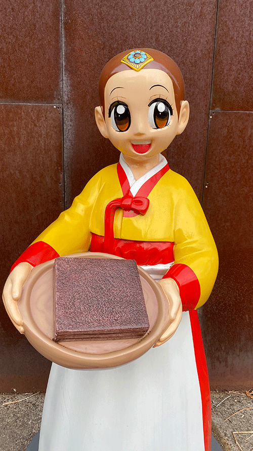
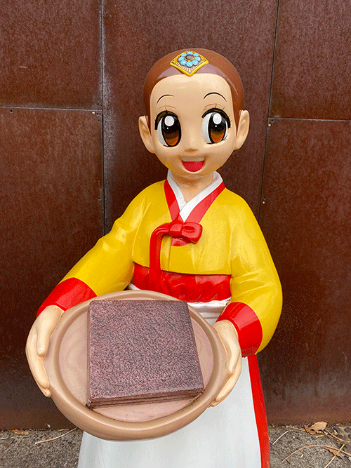
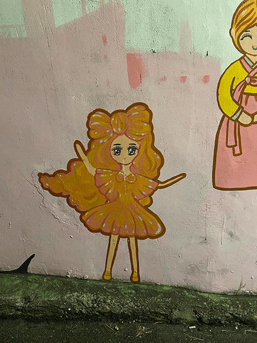
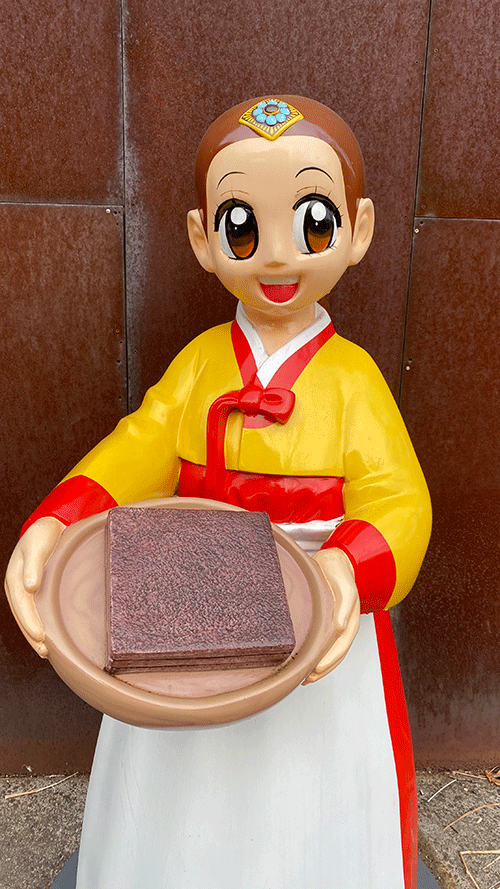
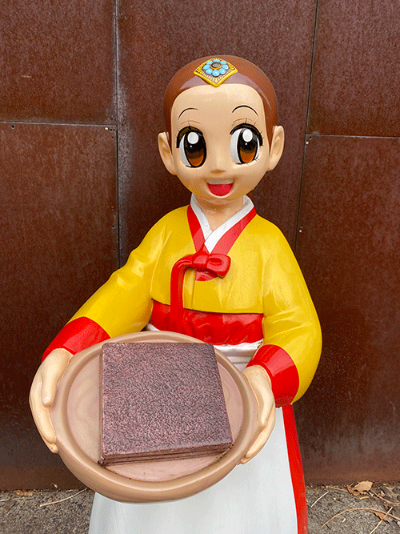
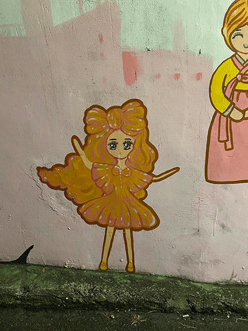
 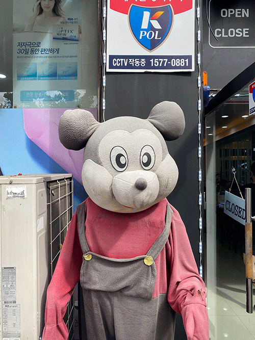
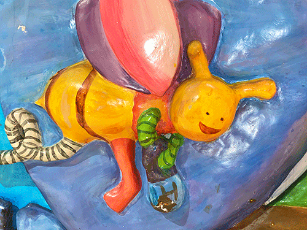
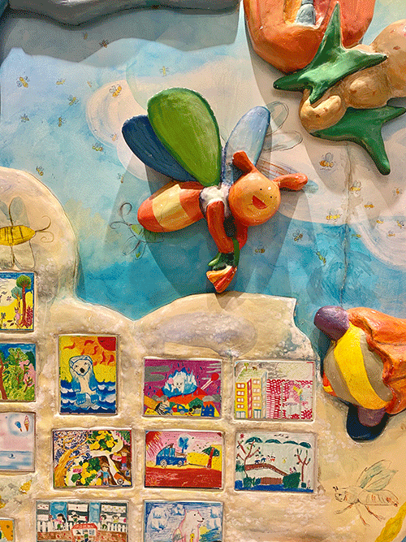
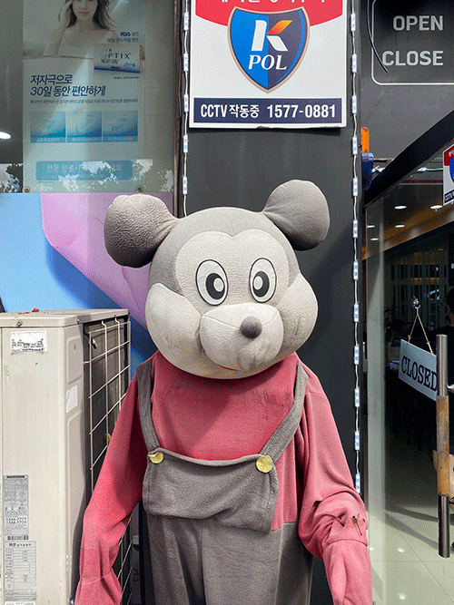
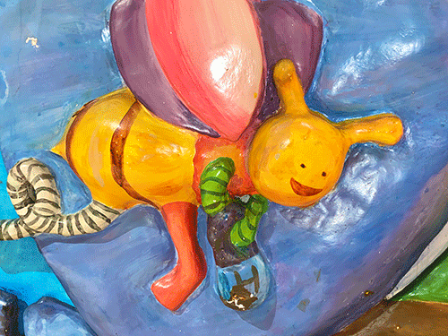
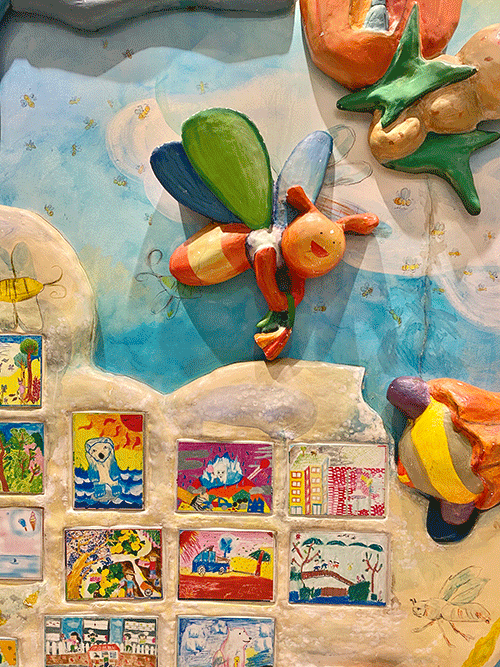
 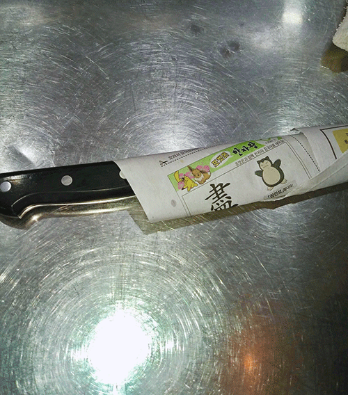
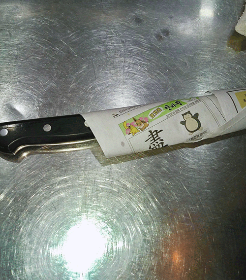
(^.^)
안녕하세요.
명랑을 수집합니다.
광기를 수집합니다.
저는 김희주(a.k.a 물렁팥죽)입니다.
반갑습니다.
사진 제공. 히히 iPhone / 디자인.웹 개발. 김희주 / 도움. 김동하
2021
데스크탑을 이용해 접속해주세요.
Please use this on a desktop.
Please use this on a desktop.